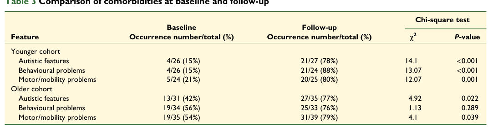

Dravet syndrome is a severe developmental and epileptic encephalopathy characterized by treatment-resistant seizures beginning in infancy, developmental regression, and cognitive impairment. It is primarily caused by de novo loss-of-function mutations in SCN1A, encoding the Nav1.1 voltage-gated sodium channel.
Ask a research question about Dravet_syndrome. OpenScientist will conduct autonomous deep research using the Disorder Mechanisms Knowledge Base and PubMed literature (typically 10-30 minutes).
Do not include personal health information in your question. Questions and results are cached in your browser's local storage.
name: Dravet_syndrome
creation_date: '2025-12-04T16:57:31Z'
description: Dravet syndrome is a severe developmental and epileptic encephalopathy characterized by treatment-resistant seizures beginning in infancy, developmental regression, and cognitive impairment. It is primarily caused by de novo loss-of-function mutations in SCN1A, encoding the Nav1.1 voltage-gated sodium channel.
category: Genetic
disease_term:
preferred_term: Dravet syndrome
term:
id: MONDO:0100135
label: Dravet syndrome
mappings:
mondo_mappings:
- term:
id: MONDO:0100135
label: Dravet syndrome
mapping_predicate: skos:exactMatch
mapping_source: Orphanet
mapping_justification: Orphanet ORPHA:33069 lists MONDO:0011794 as an exact cross-reference; MONDO:0100135 is the current preferred MONDO identifier for Dravet syndrome.
consistency:
- reference: ORPHA:33069
consistent: CONSISTENT
notes: "ORPHA cross-reference row: MONDO:0011794 | Exact"
external_assertions:
- name: Orphanet Dravet syndrome record
source: Orphanet
assertion_type: structured_disease_record
external_id: ORPHA:33069
url: http://www.orpha.net/consor/cgi-bin/OC_Exp.php?lng=en&Expert=33069
description: >
Orphanet identifies Dravet syndrome as ORPHA:33069 and provides
exact cross-references including MONDO:0011794 and OMIM:607208.
evidence:
- reference: ORPHA:33069
reference_title: "Dravet syndrome (Orphanet structured-database record)"
supports: SUPPORT
evidence_source: OTHER
snippet: "MONDO:0011794 | Exact"
explanation: Orphanet's cross-reference table maps ORPHA:33069 exactly to the MONDO term for Dravet syndrome.
- reference: ORPHA:33069
reference_title: "Dravet syndrome (Orphanet structured-database record)"
supports: SUPPORT
evidence_source: OTHER
snippet: "OMIM:607208 | Exact"
explanation: Orphanet also provides an exact OMIM cross-reference for Dravet syndrome.
parents:
- Epileptic Encephalopathy
- Neurologic Disorder
inheritance:
- name: Autosomal dominant inheritance
inheritance_term:
preferred_term: Autosomal dominant inheritance
term:
id: HP:0000006
label: Autosomal dominant inheritance
description: >
Orphanet classifies Dravet syndrome as autosomal dominant,
consistent with de novo heterozygous loss-of-function mutations in SCN1A.
evidence:
- reference: ORPHA:33069
reference_title: "Dravet syndrome (Orphanet structured-database record)"
supports: SUPPORT
evidence_source: OTHER
snippet: "Autosomal dominant"
explanation: Orphanet directly lists autosomal dominant inheritance for ORPHA:33069.
prevalence:
- population: Europe
measure_type: BIRTH_PREVALENCE
prevalence_class: BAND_1_9_PER_100000
rate_low: 1.0
rate_high: 9.0
percentage: "1-9 / 100 000"
notes: >
Orphanet prevalence at birth class for Dravet syndrome. Population-based
studies estimate incidence of 1:40,900 UK births (PMID:22719002),
1:33,000 Swedish births (PMID:25772213), and SCN1A-specific incidence of
1:12,200 Scottish births (PMID:31302675).
evidence:
- reference: ORPHA:33069
reference_title: "Dravet syndrome (Orphanet structured-database record)"
supports: SUPPORT
evidence_source: OTHER
snippet: "1-9 / 100 000 | Europe | Prevalence at birth | PMID:22719002,PMID:25772213,PMID:31302675"
explanation: Orphanet reports the European prevalence-at-birth class for Dravet syndrome based on three population-based studies.
- reference: PMID:22719002
reference_title: "Prognostic, clinical and demographic features in SCN1A mutation-positive Dravet syndrome."
supports: SUPPORT
evidence_source: HUMAN_CLINICAL
snippet: "The incidence of mutation-positive Dravet syndrome is at least 1:40 900 UK births."
explanation: UK population-based cohort establishing incidence of SCN1A mutation-positive Dravet syndrome.
- reference: PMID:25772213
reference_title: "Dravet syndrome in Sweden: a population-based study."
supports: SUPPORT
evidence_source: HUMAN_CLINICAL
snippet: "The estimated incidence was one in 33 000 live births (95% CI 1:20 400-1:56 200)"
explanation: Swedish population-based study confirming Dravet syndrome incidence.
- reference: PMID:31302675
reference_title: "Incidence and phenotypes of childhood-onset genetic epilepsies: a prospective population-based national cohort."
supports: SUPPORT
evidence_source: HUMAN_CLINICAL
snippet: "SCN1A: 1 per 12 200 (8.26/100 000; 95% confidence interval 3.93-12.6)"
explanation: Scottish prospective cohort providing SCN1A-specific epilepsy incidence.
progression:
- phase: Onset
age_range: Infancy to Neonatal
notes: >
Orphanet lists onset as Infancy and Neonatal. Seizures typically begin
between 3 and 12 months of age, often triggered by fever.
evidence:
- reference: ORPHA:33069
reference_title: "Dravet syndrome (Orphanet structured-database record)"
supports: SUPPORT
evidence_source: OTHER
snippet: "Age of onset: Infancy"
explanation: Orphanet's natural-history section classifies Dravet syndrome onset as infantile.
- reference: PMID:25772213
reference_title: "Dravet syndrome in Sweden: a population-based study."
supports: SUPPORT
evidence_source: HUMAN_CLINICAL
snippet: "the median age at seizure onset was 6 months (range 0-12mo)"
explanation: Swedish cohort confirms median seizure onset at 6 months.
pathophysiology:
- name: SCN1A Gene Mutation
description: Heterozygous loss-of-function mutations in SCN1A cause reduced Nav1.1 sodium channel function, primarily affecting GABAergic inhibitory interneurons, particularly parvalbumin-positive fast-spiking interneurons.
conforms_to: "epilepsy_excitation_inhibition_imbalance#Ion Channel and Synaptic Dysfunction"
cell_types:
- preferred_term: inhibitory interneuron
term:
id: CL:0000498
label: inhibitory interneuron
biological_processes:
- preferred_term: neuronal action potential
term:
id: GO:0019228
label: neuronal action potential
molecular_functions:
- preferred_term: voltage-gated sodium channel activity
term:
id: GO:0005248
label: voltage-gated sodium channel activity
locations:
- preferred_term: cerebral cortex
term:
id: UBERON:0000956
label: cerebral cortex
- preferred_term: Ammon's horn
term:
id: UBERON:0001954
label: Ammon's horn
evidence:
- reference: PMID:21463282
reference_title: "Insights into pathophysiology and therapy from a mouse model of Dravet syndrome."
supports: SUPPORT
evidence_source: MODEL_ORGANISM
snippet: Loss-of-function in Na(v) 1.1 channels results in severely impaired sodium current and action potential firing in hippocampal γ-aminobutyric acid (GABA)ergic interneurons without detectable changes in excitatory pyramidal neurons.
- reference: ORPHA:33069
reference_title: "Dravet syndrome (Orphanet structured-database record)"
supports: SUPPORT
evidence_source: OTHER
snippet: "SCN1A | sodium voltage-gated channel alpha subunit 1 | hgnc:10585 | Disease-causing germline mutation(s) in"
explanation: Orphanet gene table confirms SCN1A as a disease-causing gene for Dravet syndrome.
downstream:
- target: Neuronal Hyperexcitability
causal_link_type: INDIRECT_KNOWN_INTERMEDIATES
description: >-
Reduced Nav1.1 sodium current selectively impairs firing of GABAergic
inhibitory interneurons, lowering inhibitory tone and tilting cortical
and hippocampal networks toward hyperexcitability.
intermediate_mechanisms:
- Loss of Nav1.1 current reduces action-potential firing in fast-spiking GABAergic interneurons, decreasing GABA release and inhibitory drive onto excitatory neurons.
evidence:
- reference: PMID:21463282
reference_title: "Insights into pathophysiology and therapy from a mouse model of Dravet syndrome."
supports: SUPPORT
evidence_source: MODEL_ORGANISM
snippet: The resulting imbalance between excitation and inhibition likely contributes to hyperexcitability and seizures.
explanation: Links impaired interneuron sodium current to the excitation-inhibition imbalance that drives network hyperexcitability.
- name: Neuronal Hyperexcitability
description: Reduced inhibitory interneuron function leads to excitatory-inhibitory imbalance and network hyperexcitability across cortico-hippocampal and thalamocortical circuits.
conforms_to: "epilepsy_excitation_inhibition_imbalance#Excitation-Inhibition Imbalance"
cell_types:
- preferred_term: inhibitory interneuron
term:
id: CL:0000498
label: inhibitory interneuron
biological_processes:
- preferred_term: synaptic transmission, GABAergic
term:
id: GO:0051932
label: synaptic transmission, GABAergic
locations:
- preferred_term: cerebral cortex
term:
id: UBERON:0000956
label: cerebral cortex
- preferred_term: Ammon's horn
term:
id: UBERON:0001954
label: Ammon's horn
- preferred_term: dorsal plus ventral thalamus
term:
id: UBERON:0001897
label: dorsal plus ventral thalamus
evidence:
- reference: PMID:21463282
reference_title: "Insights into pathophysiology and therapy from a mouse model of Dravet syndrome."
supports: SUPPORT
evidence_source: MODEL_ORGANISM
snippet: The resulting imbalance between excitation and inhibition likely contributes to hyperexcitability and seizures.
downstream:
- target: Seizures
causal_link_type: DIRECT
- target: Complex Febrile Seizure
causal_link_type: DIRECT
- target: Febrile Seizures
causal_link_type: DIRECT
- target: Atypical Absence Seizure
causal_link_type: DIRECT
- target: Focal Aware Seizure
causal_link_type: DIRECT
- target: Focal Impaired Awareness Seizure
causal_link_type: DIRECT
- target: Focal-onset Seizure
causal_link_type: DIRECT
- target: Focal Hemiclonic Seizure
causal_link_type: DIRECT
- target: Generalized Clonic Seizure
causal_link_type: DIRECT
- target: Generalized Myoclonic Seizure
causal_link_type: DIRECT
- target: Generalized Tonic Seizure
causal_link_type: DIRECT
- target: Photosensitive Myoclonic Seizures
causal_link_type: DIRECT
- target: Photosensitive Tonic-Clonic Seizures
causal_link_type: DIRECT
- target: Epilepsia Partialis Continua
causal_link_type: DIRECT
- target: Status Epilepticus Without Prominent Motor Symptoms
causal_link_type: DIRECT
- target: EEG with Focal Epileptiform Discharges
causal_link_type: DIRECT
- target: EEG with Generalized Epileptiform Discharges
causal_link_type: DIRECT
- target: Multifocal Epileptiform Discharges
causal_link_type: DIRECT
- target: Interictal Epileptiform Activity
causal_link_type: DIRECT
- target: Cyanotic Episode
causal_link_type: INDIRECT_KNOWN_INTERMEDIATES
- target: Developmental Regression
causal_link_type: INDIRECT_KNOWN_INTERMEDIATES
- target: Cognitive Impairment
causal_link_type: INDIRECT_KNOWN_INTERMEDIATES
- target: Autistic Behavior
causal_link_type: INDIRECT_KNOWN_INTERMEDIATES
- target: Anxiety
causal_link_type: INDIRECT_KNOWN_INTERMEDIATES
- target: Impulsivity
causal_link_type: INDIRECT_KNOWN_INTERMEDIATES
- target: Short Attention Span
causal_link_type: INDIRECT_KNOWN_INTERMEDIATES
- target: Obsessive-Compulsive Trait
causal_link_type: INDIRECT_KNOWN_INTERMEDIATES
- target: Action Tremor
causal_link_type: INDIRECT_KNOWN_INTERMEDIATES
- target: Myoclonus
causal_link_type: DIRECT
- target: Progressive Gait Ataxia
causal_link_type: INDIRECT_KNOWN_INTERMEDIATES
- target: Incoordination
causal_link_type: INDIRECT_KNOWN_INTERMEDIATES
- target: Poor Fine Motor Coordination
causal_link_type: INDIRECT_KNOWN_INTERMEDIATES
- target: Global Brain Atrophy
causal_link_type: INDIRECT_KNOWN_INTERMEDIATES
- target: Postictal Serotonergic Neuron Dysfunction
causal_link_type: INDIRECT_UNKNOWN_INTERMEDIATES
hypothesis_groups:
- sudep_serotonergic_chemoreflex_model
description: >-
A generalized convulsive seizure is followed by transient impairment of
brainstem serotonergic neuron function. The intermediates by which
seizure activity reaches and silences raphe 5-HT neurons are not
established, so this edge is deliberately typed as having unknown
intermediates.
evidence:
- reference: PMID:37160367
reference_title: "Seizures Cause Prolonged Impairment of Ventilation, CO2 Chemoreception and Thermoregulation."
supports: SUPPORT
evidence_source: MODEL_ORGANISM
snippet: "convulsive seizures caused a postictal decrease in ventilation and severely depressed the HCVR in a subset of animals"
explanation: >-
In Scn1a R1407X/+ Dravet and Scn8a D/+ mice, convulsive seizures
produced postictal hypoventilation and depressed CO2 chemoreception,
the phenotypic signature of serotonergic neuron dysfunction.
- name: Postictal Serotonergic Neuron Dysfunction
biological_scale: CELLULAR
description: >-
Convulsive seizures transiently impair brainstem serotonergic neuron
function. Because 5-HT neurons of the medullary raphe are central CO2
chemoreceptors and drive multiple aspects of respiratory control, this
transient loss of serotonergic tone is the proposed cellular link between
a seizure and the postictal respiratory failure implicated in SUDEP.
Supporting the causal direction, depleting serotonin with
para-chlorophenylalanine reproduces the deficit and increases postictal
mortality, while the 5-HT releaser fenfluramine attenuates it.
cell_types:
- preferred_term: serotonergic neuron
term:
id: CL:0000850
label: serotonergic neuron
biological_processes:
- preferred_term: serotonin secretion
term:
id: GO:0001820
label: serotonin secretion
modifier: DECREASED
temporality: TRANSIENT
locations:
- preferred_term: raphe nuclei
term:
id: UBERON:0004684
label: raphe nuclei
- preferred_term: medulla oblongata
term:
id: UBERON:0001896
label: medulla oblongata
evidence:
- reference: PMID:37160367
reference_title: "Seizures Cause Prolonged Impairment of Ventilation, CO2 Chemoreception and Thermoregulation."
supports: SUPPORT
evidence_source: MODEL_ORGANISM
snippet: "Depleting 5-HT with para-chlorophenylalanine (PCPA) mimicked seizure-induced hypoventilation, partially occluded the postictal decrease in the HCVR, exacerbated hypothermia, and increased postictal mortality in DS mice."
explanation: >-
Serotonin depletion reproduces and occludes the postictal chemoreflex
deficit and raises mortality in the Scn1a Dravet model, supporting
serotonergic neuron dysfunction as the mediating cellular lesion.
- reference: PMID:37160367
reference_title: "Seizures Cause Prolonged Impairment of Ventilation, CO2 Chemoreception and Thermoregulation."
supports: SUPPORT
evidence_source: MODEL_ORGANISM
snippet: "Conversely, pretreatment with the 5-HT agonist fenfluramine reduced postictal inhibition of the HCVR and hypothermia."
explanation: >-
Bidirectional pharmacology: enhancing 5-HT tone with fenfluramine
rescues the postictal chemoreflex deficit, the preclinical rationale
for the FAST-DS trial (NCT07112365).
notes: >-
Human evidence for this node is indirect. The postictal HCVR decrease is
documented in epilepsy patients, but the serotonergic attribution rests on
mouse pharmacology; see the gap_dravet_serotonin_sudep_human_attribution
discussion.
downstream:
- target: Impaired CO2 Chemoreception and Postictal Hypoventilation
causal_link_type: DIRECT
hypothesis_groups:
- sudep_serotonergic_chemoreflex_model
description: >-
Loss of serotonergic tone directly reduces central CO2 chemoreception,
because medullary 5-HT neurons are themselves chemosensitive and set
the gain of the hypercapnic ventilatory response.
evidence:
- reference: PMID:37160367
reference_title: "Seizures Cause Prolonged Impairment of Ventilation, CO2 Chemoreception and Thermoregulation."
supports: SUPPORT
evidence_source: MODEL_ORGANISM
snippet: "A combination of blunted HCVR and abnormal thermoregulation is known to occur with dysfunction of the serotonin (5-hydroxytryptamine; 5-HT) system in mice."
explanation: >-
Ties the blunted hypercapnic ventilatory response specifically to
serotonergic system dysfunction.
- name: Impaired CO2 Chemoreception and Postictal Hypoventilation
biological_scale: ORGANISM
description: >-
Reduced central CO2 chemoreception blunts the hypercapnic ventilatory
response, so a rising arterial CO2 after a generalized convulsive seizure
fails to drive a compensatory increase in ventilation. Patients with a low
interictal HCVR slope show a larger and longer postictal CO2 rise, making
prolonged postictal hypoventilation the proposed terminal step toward
SUDEP.
biological_processes:
- preferred_term: regulation of respiratory gaseous exchange by nervous system process
term:
id: GO:0002087
label: regulation of respiratory gaseous exchange by nervous system process
modifier: DECREASED
- preferred_term: response to carbon dioxide
term:
id: GO:0010037
label: response to carbon dioxide
modifier: DECREASED
locations:
- preferred_term: medulla oblongata
term:
id: UBERON:0001896
label: medulla oblongata
evidence:
- reference: PMID:37160367
reference_title: "Seizures Cause Prolonged Impairment of Ventilation, CO2 Chemoreception and Thermoregulation."
supports: SUPPORT
evidence_source: HUMAN_CLINICAL
snippet: "Here, we show that seizures impair CO2 chemoreception in some epilepsy patients."
explanation: >-
Direct human evidence that convulsive seizures impair CO2
chemoreception, establishing this node in patients rather than only in
models.
- reference: PMID:30756391
reference_title: "Ventilatory response to CO2 in patients with epilepsy."
supports: SUPPORT
evidence_source: HUMAN_CLINICAL
snippet: "Both the duration and magnitude of postictal tcCO2 rise following GCSs were inversely correlated with HCVR slope."
explanation: >-
Quantifies the link in patients: a lower chemoreflex gain predicts a
larger and longer postictal CO2 burden after generalized convulsive
seizures.
downstream:
- target: Sudden Unexpected Death in Epilepsy
causal_link_type: INDIRECT_UNKNOWN_INTERMEDIATES
hypothesis_groups:
- sudep_serotonergic_chemoreflex_model
description: >-
Failure to mount a ventilatory response to postictal hypercapnia is
proposed to permit progressive respiratory depression and death. The
step from measured chemoreflex impairment to a fatal event has not been
observed directly in humans and remains inferential.
evidence:
- reference: PMID:30756391
reference_title: "Ventilatory response to CO2 in patients with epilepsy."
supports: SUPPORT
evidence_source: HUMAN_CLINICAL
snippet: "Low interictal HCVR may increase the risk of severe respiratory depression and SUDEP after GCS and warrants further study."
explanation: >-
The authors state the SUDEP link as a hypothesis requiring further
study, which is why this edge carries unknown intermediates rather
than being asserted as established.
- reference: PMID:29329111
reference_title: "Severe peri-ictal respiratory dysfunction is common in Dravet syndrome."
supports: SUPPORT
evidence_source: HUMAN_CLINICAL
snippet: "One patient had severe and prolonged postictal hypoventilation during video EEG monitoring and died later of SUDEP."
explanation: >-
Dravet-specific anchor for the respiratory route to death that this
edge assumes, rather than a primary cardiac arrhythmia. Note the same
work implicates a competing central cholinergic terminal-apnea
mechanism, since centrally acting muscarinic antagonists prevent death
in Scn1a mice; that arm is not modelled in this entry.
- name: Astrocyte Dysregulation
description: Aberrant astrocyte calcium signaling and gliotransmission may exacerbate network hyperexcitability and seizure susceptibility.
cell_types:
- preferred_term: astrocyte
term:
id: CL:0000127
label: astrocyte
biological_processes:
- preferred_term: regulation of cytosolic calcium ion concentration
term:
id: GO:0051480
label: regulation of cytosolic calcium ion concentration
modifier: DYSREGULATED
locations:
- preferred_term: cerebral cortex
term:
id: UBERON:0000956
label: cerebral cortex
- preferred_term: Ammon's horn
term:
id: UBERON:0001954
label: Ammon's horn
evidence:
- reference: PMID:36610382
reference_title: "Astrocyte Ca2+ signaling is facilitated in Scn1a(+/-) mouse model of Dravet syndrome."
supports: SUPPORT
evidence_source: MODEL_ORGANISM
snippet: "We found that the slope of spontaneous Ca2+ spiking was increased without a change in amplitude in Scn1a+/- astrocytes."
explanation: Scn1a+/- Dravet model astrocytes show facilitated spontaneous and ATP-evoked Ca2+ signaling, supporting astrocyte Ca2+ dysregulation as a contributor to network hyperexcitability.
- reference: PMID:36610382
reference_title: "Astrocyte Ca2+ signaling is facilitated in Scn1a(+/-) mouse model of Dravet syndrome."
supports: SUPPORT
evidence_source: MODEL_ORGANISM
snippet: "These data indicate that perturbed Ca2+ dynamics in astrocytes may be involved in the pathogenesis of DS."
explanation: The authors conclude perturbed astrocytic Ca2+ dynamics may participate in Dravet syndrome pathogenesis.
downstream:
- target: Neuronal Hyperexcitability
causal_link_type: INDIRECT_UNKNOWN_INTERMEDIATES
description: >-
Facilitated astrocytic Ca2+ signaling and gliotransmission are proposed
to further exacerbate network hyperexcitability, although the precise
coupling between astrocytic Ca2+ dynamics and neuronal excitability in
Dravet syndrome remains to be established.
evidence:
- reference: PMID:36610382
reference_title: "Astrocyte Ca2+ signaling is facilitated in Scn1a(+/-) mouse model of Dravet syndrome."
supports: SUPPORT
evidence_source: MODEL_ORGANISM
snippet: "These data indicate that perturbed Ca2+ dynamics in astrocytes may be involved in the pathogenesis of DS."
explanation: Supports astrocyte Ca2+ dysregulation as a contributing, mechanistically incompletely defined modifier of network hyperexcitability.
mechanistic_hypotheses:
- hypothesis_group_id: sudep_seizure_burden_model
hypothesis_label: Seizure-Burden Model of SUDEP Risk
status: CANONICAL
description: >-
The default account of SUDEP risk in Dravet syndrome: generalized
convulsive seizures are the dominant risk factor, so anything that lowers
convulsive seizure frequency lowers SUDEP risk without requiring a
separate protective mechanism. Under this model fenfluramine's observed
association with reduced SUDEP mortality is fully explained by its
established anticonvulsant efficacy, and no chemoreflex-specific action
need be invoked. This model is the null hypothesis that any claimed
seizure-independent anti-SUDEP mechanism must be tested against.
evidence:
- reference: PMID:34768178
reference_title: "Impact of fenfluramine on the expected SUDEP mortality rates in patients with Dravet syndrome."
supports: SUPPORT
evidence_source: HUMAN_CLINICAL
snippet: "The all-cause and SUDEP mortality rates during treatment with FFA was 1.7 per 1000 person-years"
explanation: >-
Pooled fenfluramine exposure shows a SUDEP mortality rate below
published standard-of-care estimates, an effect this model attributes
to seizure reduction alone.
notes: >-
The supporting human data are a historical-control comparison, not a
randomized SUDEP endpoint, and rest on three deaths across 1185 person
years. The comparison therefore cannot by itself discriminate this model
from the serotonergic chemoreflex model below.
- hypothesis_group_id: sudep_serotonergic_chemoreflex_model
hypothesis_label: Serotonergic Chemoreflex-Failure Model of SUDEP
status: EMERGING
description: >-
A seizure-count-independent arm: a convulsive seizure transiently impairs
brainstem serotonergic neurons, which are central CO2 chemoreceptors, so
the hypercapnic ventilatory response is depressed for a prolonged period
after the seizure ends. A patient whose chemoreflex gain is already low
then fails to clear postictal hypercapnia and dies. Under this model
fenfluramine protects by restoring postictal 5-HT tone, an action distinct
from and additional to its anticonvulsant effect, and the hypercapnic
ventilatory response becomes a candidate risk biomarker rather than merely
a physiological curiosity. The model predicts a fenfluramine effect on the
chemoreflex that is not proportional to its effect on seizure count, which
is what makes it separable from the canonical model.
evidence:
- reference: PMID:37160367
reference_title: "Seizures Cause Prolonged Impairment of Ventilation, CO2 Chemoreception and Thermoregulation."
supports: SUPPORT
evidence_source: MODEL_ORGANISM
snippet: "These results provide a scientific rationale to investigate the interictal and/or postictal HCVR as noninvasive biomarkers for those at high risk of seizure-induced death, and to prevent SUDEP by enhancing postictal 5-HT tone."
explanation: >-
States the model's two testable commitments: the HCVR as a risk
biomarker, and enhancement of postictal serotonergic tone as the
protective intervention.
- reference: PMID:30719703
reference_title: "Fenfluramine, a serotonin-releasing drug, prevents seizure-induced respiratory arrest and is anticonvulsant in the DBA/1 mouse model of SUDEP."
supports: SUPPORT
evidence_source: MODEL_ORGANISM
snippet: "Sixteen hours after administration of 15 mg/kg of fenfluramine, a high incidence of selective block of S-IRA susceptibility (P < 0.001) occurred in DBA/1 mice without blocking any convulsive behavior."
explanation: >-
The load-bearing evidence for this model's separability claim: at
15 mg/kg fenfluramine blocks seizure-induced respiratory arrest while
leaving convulsive behaviour untouched, so respiratory protection and
anticonvulsant action are pharmacologically distinct arms rather than
one effect reported two ways.
- reference: PMID:30719703
reference_title: "Fenfluramine, a serotonin-releasing drug, prevents seizure-induced respiratory arrest and is anticonvulsant in the DBA/1 mouse model of SUDEP."
supports: SUPPORT
evidence_source: MODEL_ORGANISM
snippet: "The median effective dose (ED50 ) of fenfluramine for significantly reducing Sz at 30 minutes was 21 mg/kg."
explanation: >-
Quantifies the dose separation: seizure reduction requires an ED50 of
21 mg/kg, well above the 15 mg/kg that already confers selective
respiratory protection.
- reference: PMID:34601387
reference_title: "Serotonin 5-HT4 receptors play a critical role in the action of fenfluramine to block seizure-induced sudden death in a mouse model of SUDEP."
supports: SUPPORT
evidence_source: MODEL_ORGANISM
snippet: "The 5-HT4 antagonist (GR125487) was the only 5-HT receptor antagonist that was able to reverse the action of fenfluramine to block Sz and S-IRA."
explanation: >-
Receptor-level dissection: selective 5-HT4 blockade abolishes
fenfluramine's protection against seizure-induced death, giving the
model a specific molecular target rather than a generic serotonergic
claim.
- reference: PMID:31301453
reference_title: "The association of serotonin reuptake inhibitors and benzodiazepines with ictal central apnea."
supports: PARTIAL
evidence_source: HUMAN_CLINICAL
snippet: "Neither presence nor duration of PCCA was significantly associated with SRI or BZD"
explanation: >-
Bounds the protective arm at the step that matters most. In 476 seizures
from 204 patients, chronic serotonin-reuptake-inhibitor use halved ictal
central apnea but showed no association with POSTCONVULSIVE central
apnea, the phase where this model locates fatal chemoreflex failure.
Recorded as PARTIAL rather than REFUTE because serotonin reuptake
inhibitors are not fenfluramine, which is a releaser plus sigma-1
modulator, and because a null association in an observational cohort is
not a demonstrated absence of effect.
notes: >-
All direct support for the protective arm is model-organism pharmacology.
No human study has yet measured any effect of fenfluramine on CO2
chemoreception; NCT07112365 is the first attempt. Two scope caveats from
the OpenScientist hypothesis review (see
kb/hypotheses/Dravet_syndrome/sudep_serotonergic_chemoreflex_model/): the
single-target 5-HT4 framing above is narrower than the wider literature,
which implicates several 5-HT receptors plus noradrenergic co-signalling
in a dorsal raphe-locus coeruleus-preBotzinger circuit; and serotonergic
protection may act through autoresuscitation rather than chemoreflex gain,
since fluoxetine blocks seizure-induced respiratory arrest without raising
basal ventilation while breathing stimulants that do raise it fail to
protect (PMID:26272185). That experiment measured basal ventilation, not
the CO2 response slope this model claims, so it narrows the mechanism
rather than refuting it.
phenotypes:
- category: Neurologic
name: Seizures
description: Treatment-resistant seizures beginning in the first year of life, often triggered by fever, with progression to multiple seizure types.
frequency: VERY_FREQUENT
diagnostic: true
notes: Include prolonged febrile seizures and various types of epilepsy as the condition progresses.
evidence:
- reference: PMID:21463282
reference_title: "Insights into pathophysiology and therapy from a mouse model of Dravet syndrome."
supports: SUPPORT
evidence_source: MODEL_ORGANISM
snippet: a devastating infantile-onset epilepsy with ataxia, cognitive dysfunction, and febrile and afebrile seizures resistant to current medications.
- reference: ORPHA:33069
reference_title: "Dravet syndrome (Orphanet structured-database record)"
supports: SUPPORT
evidence_source: OTHER
snippet: "HP:0007359 | Focal-onset seizure | Very frequent (99-80%)"
explanation: Orphanet's curated HPO table classifies focal-onset seizures as very frequent in Dravet syndrome, corroborating the high seizure burden.
phenotype_term:
preferred_term: Seizures
term:
id: HP:0001250
label: Seizure
- category: Neurologic
name: Focal-onset Seizure
description: >
Focal-onset seizures are a very frequent seizure type in Dravet syndrome,
classified by Orphanet among the most common manifestations.
frequency: VERY_FREQUENT
phenotype_term:
preferred_term: Focal-onset seizure
term:
id: HP:0007359
label: Focal-onset seizure
evidence:
- reference: ORPHA:33069
reference_title: "Dravet syndrome (Orphanet structured-database record)"
supports: SUPPORT
evidence_source: OTHER
snippet: "HP:0007359 | Focal-onset seizure | Very frequent (99-80%)"
explanation: Orphanet's curated HPO table classifies focal-onset seizures as very frequent in Dravet syndrome.
- category: Neurologic
name: Febrile Seizures
description: Seizures triggered by fever, typically the presenting feature in infancy between 3 months and 6 years. Often prolonged hemiclonic seizures or status epilepticus.
frequency: FREQUENT
diagnostic: true
notes: Characteristic presenting feature in early infancy, often prompts genetic evaluation for Dravet syndrome.
evidence:
- reference: ORPHA:33069
reference_title: "Dravet syndrome (Orphanet structured-database record)"
supports: SUPPORT
evidence_source: OTHER
snippet: "HP:0002373 | Febrile seizure (within the age range of 3 months to 6 years) | Frequent (79-30%)"
explanation: Orphanet's curated HPO table classifies febrile seizures as frequent in Dravet syndrome.
phenotype_term:
preferred_term: Febrile seizure (within the age range of 3 months to 6 years)
term:
id: HP:0002373
label: Febrile seizure (within the age range of 3 months to 6 years)
- category: Neurologic
name: Complex Febrile Seizure
description: >
Prolonged or focal febrile seizures, frequently the presenting seizure
type in Dravet syndrome.
frequency: FREQUENT
phenotype_term:
preferred_term: Complex febrile seizure
term:
id: HP:0011172
label: Complex febrile seizure
evidence:
- reference: ORPHA:33069
reference_title: "Dravet syndrome (Orphanet structured-database record)"
supports: SUPPORT
evidence_source: OTHER
snippet: "HP:0011172 | Complex febrile seizure | Frequent (79-30%)"
explanation: Orphanet's curated HPO table classifies complex febrile seizures as frequent in Dravet syndrome.
- category: Neurologic
name: Focal Hemiclonic Seizure
description: >
Hemiclonic seizures are a frequent and characteristic seizure type in
Dravet syndrome, often occurring during the initial febrile presentation.
frequency: FREQUENT
phenotype_term:
preferred_term: Focal hemiclonic seizure
term:
id: HP:0006813
label: Focal hemiclonic seizure
evidence:
- reference: ORPHA:33069
reference_title: "Dravet syndrome (Orphanet structured-database record)"
supports: SUPPORT
evidence_source: OTHER
snippet: "HP:0006813 | Focal hemiclonic seizure | Frequent (79-30%)"
explanation: Orphanet's curated HPO table classifies focal hemiclonic seizures as frequent in Dravet syndrome.
- category: Neurologic
name: Generalized Myoclonic Seizure
description: >
Myoclonic seizures are a frequent seizure type in Dravet syndrome,
consistent with its historical designation as severe myoclonic epilepsy
of infancy (SMEI).
frequency: FREQUENT
phenotype_term:
preferred_term: Generalized myoclonic seizure
term:
id: HP:0002123
label: Generalized myoclonic seizure
evidence:
- reference: ORPHA:33069
reference_title: "Dravet syndrome (Orphanet structured-database record)"
supports: SUPPORT
evidence_source: OTHER
snippet: "HP:0002123 | Generalized myoclonic seizure | Frequent (79-30%)"
explanation: Orphanet's curated HPO table classifies generalized myoclonic seizures as frequent in Dravet syndrome.
- category: Neurologic
name: Photosensitive Myoclonic Seizures
description: >
Seizures triggered by photic stimulation, a frequent feature in
Dravet syndrome reflecting photosensitivity.
frequency: FREQUENT
phenotype_term:
preferred_term: Photosensitive myoclonic seizures
term:
id: HP:0001327
label: Photosensitive myoclonic seizure
evidence:
- reference: ORPHA:33069
reference_title: "Dravet syndrome (Orphanet structured-database record)"
supports: SUPPORT
evidence_source: OTHER
snippet: "HP:0001327 | Photomyoclonic seizures | Frequent (79-30%)"
explanation: Orphanet's curated HPO table classifies photomyoclonic seizures as frequent in Dravet syndrome.
- category: Neurologic
name: Photosensitive Tonic-Clonic Seizures
description: >
Tonic-clonic seizures triggered by photosensitivity, a frequent
manifestation in Dravet syndrome.
frequency: FREQUENT
phenotype_term:
preferred_term: Photosensitive tonic-clonic seizures
term:
id: HP:0007207
label: Photosensitive tonic-clonic seizure
evidence:
- reference: ORPHA:33069
reference_title: "Dravet syndrome (Orphanet structured-database record)"
supports: SUPPORT
evidence_source: OTHER
snippet: "HP:0007207 | Photosensitive tonic-clonic seizures | Frequent (79-30%)"
explanation: Orphanet's curated HPO table classifies photosensitive tonic-clonic seizures as frequent in Dravet syndrome.
- category: Neurologic
name: Focal Aware Seizure
description: >
Focal seizures with preserved awareness, a frequent seizure type in
Dravet syndrome.
frequency: FREQUENT
phenotype_term:
preferred_term: Focal aware seizure
term:
id: HP:0002349
label: Focal aware seizure
evidence:
- reference: ORPHA:33069
reference_title: "Dravet syndrome (Orphanet structured-database record)"
supports: SUPPORT
evidence_source: OTHER
snippet: "HP:0002349 | Focal aware seizure | Frequent (79-30%)"
explanation: Orphanet's curated HPO table classifies focal aware seizures as frequent in Dravet syndrome.
- category: Neurologic
name: Focal Impaired Awareness Seizure
description: >
Focal seizures with impaired awareness, a frequent seizure type in
Dravet syndrome.
frequency: FREQUENT
phenotype_term:
preferred_term: Focal impaired awareness seizure
term:
id: HP:0002384
label: Focal impaired awareness seizure
evidence:
- reference: ORPHA:33069
reference_title: "Dravet syndrome (Orphanet structured-database record)"
supports: SUPPORT
evidence_source: OTHER
snippet: "HP:0002384 | Focal impaired awareness seizure | Frequent (79-30%)"
explanation: Orphanet's curated HPO table classifies focal impaired awareness seizures as frequent in Dravet syndrome.
- category: Neurologic
name: Atypical Absence Seizure
description: >
Atypical absence seizures are a frequent seizure type in the Dravet
syndrome spectrum.
frequency: FREQUENT
phenotype_term:
preferred_term: Atypical absence seizure
term:
id: HP:0007270
label: Atypical absence seizure
evidence:
- reference: ORPHA:33069
reference_title: "Dravet syndrome (Orphanet structured-database record)"
supports: SUPPORT
evidence_source: OTHER
snippet: "HP:0007270 | Atypical absence seizure | Frequent (79-30%)"
explanation: Orphanet's curated HPO table classifies atypical absence seizures as frequent in Dravet syndrome.
- category: Neurologic
name: Generalized Clonic Seizure
description: >
Generalized clonic seizures are among the frequent seizure types in
Dravet syndrome.
frequency: FREQUENT
phenotype_term:
preferred_term: Generalized clonic seizure
term:
id: HP:0011169
label: Generalized clonic seizure
evidence:
- reference: ORPHA:33069
reference_title: "Dravet syndrome (Orphanet structured-database record)"
supports: SUPPORT
evidence_source: OTHER
snippet: "HP:0011169 | Generalized clonic seizure | Frequent (79-30%)"
explanation: Orphanet's curated HPO table classifies generalized clonic seizures as frequent in Dravet syndrome.
- category: Neurologic
name: Epilepsia Partialis Continua
description: >
Continuous focal seizure activity, listed as a frequent manifestation
in Dravet syndrome by Orphanet.
frequency: FREQUENT
phenotype_term:
preferred_term: Epilepsia partialis continua
term:
id: HP:0012847
label: Epilepsia partialis continua
evidence:
- reference: ORPHA:33069
reference_title: "Dravet syndrome (Orphanet structured-database record)"
supports: SUPPORT
evidence_source: OTHER
snippet: "HP:0012847 | Epilepsia partialis continua | Frequent (79-30%)"
explanation: Orphanet's curated HPO table classifies epilepsia partialis continua as frequent in Dravet syndrome.
- category: Neurologic
name: Status Epilepticus Without Prominent Motor Symptoms
description: >
Non-convulsive status epilepticus, an occasional manifestation in
Dravet syndrome.
frequency: OCCASIONAL
phenotype_term:
preferred_term: Status epilepticus without prominent motor symptoms
term:
id: HP:0031475
label: Status epilepticus without prominent motor symptoms
evidence:
- reference: ORPHA:33069
reference_title: "Dravet syndrome (Orphanet structured-database record)"
supports: SUPPORT
evidence_source: OTHER
snippet: "HP:0031475 | Status epilepticus without prominent motor symptoms | Occasional (29-5%)"
explanation: Orphanet's curated HPO table classifies non-convulsive status epilepticus as occasional in Dravet syndrome.
- reference: PMID:22719002
reference_title: "Prognostic, clinical and demographic features in SCN1A mutation-positive Dravet syndrome."
supports: SUPPORT
evidence_source: HUMAN_CLINICAL
snippet: "status epilepticus (odds ratio = 3.1; confidence interval = 1.5-6.3; P = 0.003)"
explanation: Brunklaus et al. identify status epilepticus as a significant prognostic predictor of worse developmental outcome.
- category: Neurologic
name: Generalized Tonic Seizure
description: >
Generalized tonic seizures are a very rare seizure type in Dravet syndrome.
frequency: VERY_RARE
phenotype_term:
preferred_term: Generalized tonic seizure
term:
id: HP:0010818
label: Generalized tonic seizure
evidence:
- reference: ORPHA:33069
reference_title: "Dravet syndrome (Orphanet structured-database record)"
supports: SUPPORT
evidence_source: OTHER
snippet: "HP:0010818 | Generalized tonic seizure | Very rare (<4-1%)"
explanation: Orphanet's curated HPO table classifies generalized tonic seizures as very rare in Dravet syndrome.
- category: Nervous System
name: Multifocal Epileptiform Discharges
description: >
Multifocal epileptiform discharges on interictal EEG, a frequent finding in
Dravet syndrome.
frequency: FREQUENT
phenotype_term:
preferred_term: Multifocal epileptiform discharges
term:
id: HP:0010841
label: Multifocal epileptiform discharges
electrophysiology:
electrophysiology_modality: EEG
ictal_state: INTERICTAL
evidence:
- reference: ORPHA:33069
reference_title: "Dravet syndrome (Orphanet structured-database record)"
supports: SUPPORT
evidence_source: OTHER
snippet: "HP:0010841 | Multifocal epileptiform discharges | Frequent (79-30%)"
explanation: Orphanet's curated HPO table classifies multifocal epileptiform discharges as frequent in Dravet syndrome.
- category: Nervous System
name: Interictal Epileptiform Activity
description: >
Epileptiform activity between seizures on EEG, a frequent finding in Dravet
syndrome. Early interictal abnormalities are prognostically significant.
frequency: FREQUENT
phenotype_term:
preferred_term: Interictal epileptiform activity
term:
id: HP:0011182
label: Interictal epileptiform activity
electrophysiology:
electrophysiology_modality: EEG
ictal_state: INTERICTAL
evidence:
- reference: ORPHA:33069
reference_title: "Dravet syndrome (Orphanet structured-database record)"
supports: SUPPORT
evidence_source: OTHER
snippet: "HP:0011182 | Interictal epileptiform activity | Frequent (79-30%)"
explanation: Orphanet's curated HPO table classifies interictal epileptiform activity as frequent in Dravet syndrome.
- reference: PMID:22719002
reference_title: "Prognostic, clinical and demographic features in SCN1A mutation-positive Dravet syndrome."
supports: SUPPORT
evidence_source: HUMAN_CLINICAL
snippet: "interictal electroencephalography abnormalities in the first year of life (odds ratio = 5.7; confidence interval = 1.9-16.8; P = 0.002)"
explanation: UK cohort identifies interictal EEG abnormalities in the first year as a strong predictor of worse developmental outcome.
- category: Nervous System
name: EEG with Focal Epileptiform Discharges
description: >
Focal epileptiform discharges on interictal EEG, an occasional finding in
Dravet syndrome.
frequency: OCCASIONAL
phenotype_term:
preferred_term: EEG with focal epileptiform discharges
term:
id: HP:0011185
label: EEG with focal epileptiform discharges
electrophysiology:
electrophysiology_modality: EEG
ictal_state: INTERICTAL
evidence:
- reference: ORPHA:33069
reference_title: "Dravet syndrome (Orphanet structured-database record)"
supports: SUPPORT
evidence_source: OTHER
snippet: "HP:0011185 | EEG with focal epileptiform discharges | Occasional (29-5%)"
explanation: Orphanet's curated HPO table classifies focal EEG epileptiform discharges as occasional in Dravet syndrome.
- category: Nervous System
name: EEG with Generalized Epileptiform Discharges
description: >
Generalized epileptiform discharges on interictal EEG, an occasional finding
in Dravet syndrome.
frequency: OCCASIONAL
phenotype_term:
preferred_term: EEG with generalized epileptiform discharges
term:
id: HP:0011198
label: EEG with generalized epileptiform discharges
electrophysiology:
electrophysiology_modality: EEG
ictal_state: INTERICTAL
evidence:
- reference: ORPHA:33069
reference_title: "Dravet syndrome (Orphanet structured-database record)"
supports: SUPPORT
evidence_source: OTHER
snippet: "HP:0011198 | EEG with generalized epileptiform discharges | Occasional (29-5%)"
explanation: Orphanet's curated HPO table classifies generalized EEG epileptiform discharges as occasional in Dravet syndrome.
- category: Nervous System
name: Electrographic Seizures (Scn1a+/- Mouse Model)
description: >
Ictal electrographic (EEG) seizures recorded in the Scn1a+/- mouse model of
Dravet syndrome; their incidence is reduced by an SCN1A-upregulating
antisense oligonucleotide. Preclinical electrophysiology has no dedicated HP
term, so the finding is carried on preferred_term with the electrophysiology
sidecar rather than a bound phenotype_term.
frequency: FREQUENT
phenotype_term:
preferred_term: Electrographic seizure
electrophysiology:
electrophysiology_modality: EEG
ictal_state: ICTAL
evidence:
- reference: PMID:32848094
reference_title: "Antisense oligonucleotides increase Scn1a expression and reduce seizures and SUDEP incidence in a mouse model of Dravet syndrome."
supports: SUPPORT
evidence_source: MODEL_ORGANISM
snippet: "reduced the incidence of electrographic seizures and sudden unexpected death in epilepsy (SUDEP)"
explanation: Demonstrates ictal electrographic seizures in the Scn1a+/- mouse model and their reduction by a productive-SCN1A-restoring ASO.
- category: Developmental
name: Developmental Regression
description: >
Progressive developmental regression typically beginning after
seizure onset, affecting motor, language, and social skills.
Classified as very frequent by Orphanet.
frequency: VERY_FREQUENT
evidence:
- reference: PMID:21463282
reference_title: "Insights into pathophysiology and therapy from a mouse model of Dravet syndrome."
supports: SUPPORT
evidence_source: MODEL_ORGANISM
snippet: a devastating infantile-onset epilepsy with ataxia, cognitive dysfunction, and febrile and afebrile seizures resistant to current medications.
- reference: ORPHA:33069
reference_title: "Dravet syndrome (Orphanet structured-database record)"
supports: SUPPORT
evidence_source: OTHER
snippet: "HP:0002376 | Developmental regression | Very frequent (99-80%)"
explanation: Orphanet's curated HPO table classifies developmental regression as very frequent in Dravet syndrome.
phenotype_term:
preferred_term: Developmental regression
term:
id: HP:0002376
label: Developmental regression
- category: Cognitive
name: Cognitive Impairment
description: Cognitive impairment ranging from mild to severe, often progressive in nature.
frequency: FREQUENT
notes: Ranges from mild to severe.
evidence:
- reference: ORPHA:33069
reference_title: "Dravet syndrome (Orphanet structured-database record)"
supports: SUPPORT
evidence_source: OTHER
snippet: "HP:0100543 | Cognitive impairment | Frequent (79-30%)"
explanation: Orphanet's curated HPO table classifies cognitive impairment as frequent in Dravet syndrome.
- reference: PMID:25772213
reference_title: "Dravet syndrome in Sweden: a population-based study."
supports: SUPPORT
evidence_source: HUMAN_CLINICAL
snippet: "Intellectual disability was diagnosed in 28 (67%) children"
explanation: Swedish population-based study found intellectual disability in 67% of children with Dravet syndrome.
phenotype_term:
preferred_term: Cognitive impairment
term:
id: HP:0100543
label: Cognitive impairment
- category: Neurologic
name: Progressive Gait Ataxia
description: >
Progressive gait ataxia is a very frequent manifestation in Dravet
syndrome, affecting coordination and balance with worsening over time.
frequency: VERY_FREQUENT
evidence:
- reference: ORPHA:33069
reference_title: "Dravet syndrome (Orphanet structured-database record)"
supports: SUPPORT
evidence_source: OTHER
snippet: "HP:0007240 | Progressive gait ataxia | Very frequent (99-80%)"
explanation: Orphanet's curated HPO table classifies progressive gait ataxia as very frequent in Dravet syndrome.
- reference: PMID:22719002
reference_title: "Prognostic, clinical and demographic features in SCN1A mutation-positive Dravet syndrome."
supports: SUPPORT
evidence_source: HUMAN_CLINICAL
snippet: "motor disorder (odds ratio = 3.3; confidence interval = 1.7-6.4; P < 0.001)"
explanation: UK cohort identifies motor disorder as a strong predictor of worse developmental outcome, consistent with prominent gait ataxia.
phenotype_term:
preferred_term: Progressive gait ataxia
term:
id: HP:0007240
label: Progressive gait ataxia
- category: Behavioral
name: Autistic Behavior
description: Autism spectrum features including impaired social interaction, communication difficulties, and restricted repetitive behaviors.
frequency: FREQUENT
notes: Behavioral and autism-like traits frequently observed and may relate to disrupted circuit development.
evidence:
- reference: ORPHA:33069
reference_title: "Dravet syndrome (Orphanet structured-database record)"
supports: SUPPORT
evidence_source: OTHER
snippet: "HP:0000729 | Autistic behavior | Frequent (79-30%)"
explanation: Orphanet's curated HPO table classifies autistic behavior as frequent in Dravet syndrome.
- reference: PMID:25772213
reference_title: "Dravet syndrome in Sweden: a population-based study."
supports: SUPPORT
evidence_source: HUMAN_CLINICAL
snippet: "18 out of 30 patients investigated had autism spectrum disorder"
explanation: Swedish population-based study found autism spectrum disorder in 60% of investigated Dravet patients.
phenotype_term:
preferred_term: Autistic behavior
term:
id: HP:0000729
label: Autistic behavior
- category: Behavioral
name: Anxiety
description: >
Anxiety is a frequent behavioral feature in Dravet syndrome.
frequency: FREQUENT
phenotype_term:
preferred_term: Anxiety
term:
id: HP:0000739
label: Anxiety
evidence:
- reference: ORPHA:33069
reference_title: "Dravet syndrome (Orphanet structured-database record)"
supports: SUPPORT
evidence_source: OTHER
snippet: "HP:0000739 | Anxiety | Frequent (79-30%)"
explanation: Orphanet's curated HPO table classifies anxiety as frequent in Dravet syndrome.
- category: Behavioral
name: Obsessive-Compulsive Trait
description: >
Obsessive-compulsive behavioral traits are a frequent feature in
Dravet syndrome.
frequency: FREQUENT
phenotype_term:
preferred_term: Obsessive-compulsive trait
term:
id: HP:0008770
label: Obsessive-compulsive trait
evidence:
- reference: ORPHA:33069
reference_title: "Dravet syndrome (Orphanet structured-database record)"
supports: SUPPORT
evidence_source: OTHER
snippet: "HP:0008770 | Obsessive-compulsive trait | Frequent (79-30%)"
explanation: Orphanet's curated HPO table classifies obsessive-compulsive traits as frequent in Dravet syndrome.
- category: Behavioral
name: Short Attention Span
description: >
Attention deficits and short attention span, an occasional behavioral
feature in Dravet syndrome.
frequency: OCCASIONAL
phenotype_term:
preferred_term: Short attention span
term:
id: HP:0000736
label: Short attention span
evidence:
- reference: ORPHA:33069
reference_title: "Dravet syndrome (Orphanet structured-database record)"
supports: SUPPORT
evidence_source: OTHER
snippet: "HP:0000736 | Short attention span | Occasional (29-5%)"
explanation: Orphanet's curated HPO table classifies short attention span as occasional in Dravet syndrome.
- category: Behavioral
name: Impulsivity
description: >
Impulsive behavior, an occasional behavioral feature in Dravet syndrome.
frequency: OCCASIONAL
phenotype_term:
preferred_term: Impulsivity
term:
id: HP:0100710
label: Impulsivity
evidence:
- reference: ORPHA:33069
reference_title: "Dravet syndrome (Orphanet structured-database record)"
supports: SUPPORT
evidence_source: OTHER
snippet: "HP:0100710 | Impulsivity | Occasional (29-5%)"
explanation: Orphanet's curated HPO table classifies impulsivity as occasional in Dravet syndrome.
- category: Neurologic
name: Myoclonus
description: >
Non-epileptic myoclonus is a frequent motor feature in Dravet syndrome.
frequency: FREQUENT
phenotype_term:
preferred_term: Myoclonus
term:
id: HP:0001336
label: Myoclonus
evidence:
- reference: ORPHA:33069
reference_title: "Dravet syndrome (Orphanet structured-database record)"
supports: SUPPORT
evidence_source: OTHER
snippet: "HP:0001336 | Myoclonus | Frequent (79-30%)"
explanation: Orphanet's curated HPO table classifies myoclonus as frequent in Dravet syndrome.
- category: Neurologic
name: Parkinsonism
description: >
Parkinsonian features including rigidity, bradykinesia, and cogwheel
rigidity, emerging as frequent manifestations particularly in older
patients with Dravet syndrome.
frequency: FREQUENT
phenotype_term:
preferred_term: Parkinsonism
term:
id: HP:0001300
label: Parkinsonism
evidence:
- reference: ORPHA:33069
reference_title: "Dravet syndrome (Orphanet structured-database record)"
supports: SUPPORT
evidence_source: OTHER
snippet: "HP:0001300 | Parkinsonism | Frequent (79-30%)"
explanation: Orphanet's curated HPO table classifies parkinsonism as frequent in Dravet syndrome.
- category: Neurologic
name: Rigidity
description: >
Muscular rigidity is a frequent motor feature in Dravet syndrome,
part of the parkinsonian phenotype spectrum.
frequency: FREQUENT
phenotype_term:
preferred_term: Rigidity
term:
id: HP:0002063
label: Rigidity
evidence:
- reference: ORPHA:33069
reference_title: "Dravet syndrome (Orphanet structured-database record)"
supports: SUPPORT
evidence_source: OTHER
snippet: "HP:0002063 | Rigidity | Frequent (79-30%)"
explanation: Orphanet's curated HPO table classifies rigidity as frequent in Dravet syndrome.
- category: Neurologic
name: Bradykinesia
description: >
Slowness of movement, a frequent feature of the parkinsonian
phenotype in Dravet syndrome.
frequency: FREQUENT
phenotype_term:
preferred_term: Bradykinesia
term:
id: HP:0002067
label: Bradykinesia
evidence:
- reference: ORPHA:33069
reference_title: "Dravet syndrome (Orphanet structured-database record)"
supports: SUPPORT
evidence_source: OTHER
snippet: "HP:0002067 | Bradykinesia | Frequent (79-30%)"
explanation: Orphanet's curated HPO table classifies bradykinesia as frequent in Dravet syndrome.
- category: Neurologic
name: Cogwheel Rigidity
description: >
Cogwheel-type rigidity, a frequent parkinsonian feature in Dravet syndrome.
frequency: FREQUENT
phenotype_term:
preferred_term: Cogwheel rigidity
term:
id: HP:0002396
label: Cogwheel rigidity
evidence:
- reference: ORPHA:33069
reference_title: "Dravet syndrome (Orphanet structured-database record)"
supports: SUPPORT
evidence_source: OTHER
snippet: "HP:0002396 | Cogwheel rigidity | Frequent (79-30%)"
explanation: Orphanet's curated HPO table classifies cogwheel rigidity as frequent in Dravet syndrome.
- category: Neurologic
name: Action Tremor
description: >
Tremor during voluntary movement, an occasional motor feature in
Dravet syndrome.
frequency: OCCASIONAL
phenotype_term:
preferred_term: Action tremor
term:
id: HP:0002345
label: Action tremor
evidence:
- reference: ORPHA:33069
reference_title: "Dravet syndrome (Orphanet structured-database record)"
supports: SUPPORT
evidence_source: OTHER
snippet: "HP:0002345 | Action tremor | Occasional (29-5%)"
explanation: Orphanet's curated HPO table classifies action tremor as occasional in Dravet syndrome.
- category: Neurologic
name: Facial Tics
description: >
Facial tics are a frequent motor feature in Dravet syndrome.
frequency: FREQUENT
phenotype_term:
preferred_term: Facial tics
term:
id: HP:0011468
label: Facial tics
evidence:
- reference: ORPHA:33069
reference_title: "Dravet syndrome (Orphanet structured-database record)"
supports: SUPPORT
evidence_source: OTHER
snippet: "HP:0011468 | Facial tics | Frequent (79-30%)"
explanation: Orphanet's curated HPO table classifies facial tics as frequent in Dravet syndrome.
- category: Neurologic
name: Incoordination
description: >
General motor incoordination, an occasional feature in Dravet syndrome.
frequency: OCCASIONAL
phenotype_term:
preferred_term: Incoordination
term:
id: HP:0002311
label: Incoordination
evidence:
- reference: ORPHA:33069
reference_title: "Dravet syndrome (Orphanet structured-database record)"
supports: SUPPORT
evidence_source: OTHER
snippet: "HP:0002311 | Incoordination | Occasional (29-5%)"
explanation: Orphanet's curated HPO table classifies incoordination as occasional in Dravet syndrome.
- category: Neurologic
name: Poor Fine Motor Coordination
description: >
Impaired fine motor skills, an occasional feature in Dravet syndrome.
frequency: OCCASIONAL
phenotype_term:
preferred_term: Poor fine motor coordination
term:
id: HP:0007010
label: Poor fine motor coordination
evidence:
- reference: ORPHA:33069
reference_title: "Dravet syndrome (Orphanet structured-database record)"
supports: SUPPORT
evidence_source: OTHER
snippet: "HP:0007010 | Poor fine motor coordination | Occasional (29-5%)"
explanation: Orphanet's curated HPO table classifies poor fine motor coordination as occasional in Dravet syndrome.
- category: Neurologic
name: Drooling
description: >
Drooling (sialorrhea), an occasional feature in Dravet syndrome
reflecting oropharyngeal motor dysfunction.
frequency: OCCASIONAL
phenotype_term:
preferred_term: Drooling
term:
id: HP:0002307
label: Drooling
evidence:
- reference: ORPHA:33069
reference_title: "Dravet syndrome (Orphanet structured-database record)"
supports: SUPPORT
evidence_source: OTHER
snippet: "HP:0002307 | Drooling | Occasional (29-5%)"
explanation: Orphanet's curated HPO table classifies drooling as occasional in Dravet syndrome.
- category: Neurologic
name: Floppy Infant
description: >
Infantile hypotonia, an occasional early feature in Dravet syndrome.
frequency: OCCASIONAL
phenotype_term:
preferred_term: Floppy infant
term:
id: HP:0008947
label: Floppy infant
evidence:
- reference: ORPHA:33069
reference_title: "Dravet syndrome (Orphanet structured-database record)"
supports: SUPPORT
evidence_source: OTHER
snippet: "HP:0008947 | Floppy infant | Occasional (29-5%)"
explanation: Orphanet's curated HPO table classifies infantile hypotonia as occasional in Dravet syndrome.
- category: Neuroimaging
name: Global Brain Atrophy
description: >
Non-specific brain atrophy on neuroimaging, an occasional finding in
Dravet syndrome.
frequency: OCCASIONAL
evidence:
- reference: ORPHA:33069
reference_title: "Dravet syndrome (Orphanet structured-database record)"
supports: SUPPORT
evidence_source: OTHER
snippet: "HP:0002283 | Global brain atrophy | Occasional (29-5%)"
explanation: Orphanet's curated HPO table classifies global brain atrophy as occasional in Dravet syndrome.
- reference: PMID:22719002
reference_title: "Prognostic, clinical and demographic features in SCN1A mutation-positive Dravet syndrome."
supports: SUPPORT
evidence_source: HUMAN_CLINICAL
snippet: "Abnormal magnetic resonance imaging was documented in 11% of cases, principally with findings of non-specific brain atrophy or hippocampal changes."
explanation: UK cohort found brain atrophy or hippocampal changes in 11% of Dravet cases.
phenotype_term:
preferred_term: Global brain atrophy
term:
id: HP:0002283
label: Global brain atrophy
- category: Neuroimaging
name: Dysgenesis of the Hippocampus
description: >
Hippocampal structural abnormalities, an occasional neuroimaging
finding in Dravet syndrome.
frequency: OCCASIONAL
phenotype_term:
preferred_term: Dysgenesis of the hippocampus
term:
id: HP:0025101
label: Dysgenesis of the hippocampus
evidence:
- reference: ORPHA:33069
reference_title: "Dravet syndrome (Orphanet structured-database record)"
supports: SUPPORT
evidence_source: OTHER
snippet: "HP:0025101 | Dysgenesis of the hippocampus | Occasional (29-5%)"
explanation: Orphanet's curated HPO table classifies hippocampal dysgenesis as occasional in Dravet syndrome.
- reference: PMID:22719002
reference_title: "Prognostic, clinical and demographic features in SCN1A mutation-positive Dravet syndrome."
supports: SUPPORT
evidence_source: HUMAN_CLINICAL
snippet: "principally with findings of non-specific brain atrophy or hippocampal changes"
explanation: UK cohort found hippocampal changes among the neuroimaging abnormalities in Dravet syndrome.
- category: Musculoskeletal
name: Limited Neck Range of Motion
description: >
Restricted neck mobility, a frequent musculoskeletal feature in
Dravet syndrome.
frequency: FREQUENT
phenotype_term:
preferred_term: Limited neck range of motion
term:
id: HP:0000466
label: Limited neck range of motion
evidence:
- reference: ORPHA:33069
reference_title: "Dravet syndrome (Orphanet structured-database record)"
supports: SUPPORT
evidence_source: OTHER
snippet: "HP:0000466 | Limited neck range of motion | Frequent (79-30%)"
explanation: Orphanet's curated HPO table classifies limited neck range of motion as frequent in Dravet syndrome.
- category: Musculoskeletal
name: Pes Planus
description: >
Flat feet, an occasional musculoskeletal feature in Dravet syndrome.
frequency: OCCASIONAL
phenotype_term:
preferred_term: Pes planus
term:
id: HP:0001763
label: Pes planus
evidence:
- reference: ORPHA:33069
reference_title: "Dravet syndrome (Orphanet structured-database record)"
supports: SUPPORT
evidence_source: OTHER
snippet: "HP:0001763 | Pes planus | Occasional (29-5%)"
explanation: Orphanet's curated HPO table classifies pes planus as occasional in Dravet syndrome.
- category: Musculoskeletal
name: Pes Valgus
description: >
Valgus foot deformity, an occasional musculoskeletal feature in
Dravet syndrome.
frequency: OCCASIONAL
phenotype_term:
preferred_term: Pes valgus
term:
id: HP:0008081
label: Pes valgus
evidence:
- reference: ORPHA:33069
reference_title: "Dravet syndrome (Orphanet structured-database record)"
supports: SUPPORT
evidence_source: OTHER
snippet: "HP:0008081 | Pes valgus | Occasional (29-5%)"
explanation: Orphanet's curated HPO table classifies pes valgus as occasional in Dravet syndrome.
- category: Musculoskeletal
name: Limited Knee Extension
description: >
Restricted knee extension, an occasional musculoskeletal feature in
Dravet syndrome.
frequency: OCCASIONAL
phenotype_term:
preferred_term: Limited knee extension
term:
id: HP:0003066
label: Limited knee extension
evidence:
- reference: ORPHA:33069
reference_title: "Dravet syndrome (Orphanet structured-database record)"
supports: SUPPORT
evidence_source: OTHER
snippet: "HP:0003066 | Limited knee extension | Occasional (29-5%)"
explanation: Orphanet's curated HPO table classifies limited knee extension as occasional in Dravet syndrome.
- category: Musculoskeletal
name: Tibial Torsion
description: >
Tibial torsion, an occasional orthopedic feature in Dravet syndrome.
frequency: OCCASIONAL
phenotype_term:
preferred_term: Tibial torsion
term:
id: HP:0100694
label: Tibial torsion
evidence:
- reference: ORPHA:33069
reference_title: "Dravet syndrome (Orphanet structured-database record)"
supports: SUPPORT
evidence_source: OTHER
snippet: "HP:0100694 | Tibial torsion | Occasional (29-5%)"
explanation: Orphanet's curated HPO table classifies tibial torsion as occasional in Dravet syndrome.
- category: Other
name: Pallor
description: >
Pallor is an occasional feature in Dravet syndrome, which may occur
during ictal or postictal periods.
frequency: OCCASIONAL
phenotype_term:
preferred_term: Pallor
term:
id: HP:0000980
label: Pallor
evidence:
- reference: ORPHA:33069
reference_title: "Dravet syndrome (Orphanet structured-database record)"
supports: SUPPORT
evidence_source: OTHER
snippet: "HP:0000980 | Pallor | Occasional (29-5%)"
explanation: Orphanet's curated HPO table classifies pallor as occasional in Dravet syndrome.
- category: Other
name: Cyanotic Episode
description: >
Episodes of cyanosis, an occasional feature in Dravet syndrome
potentially related to ictal autonomic dysfunction.
frequency: OCCASIONAL
phenotype_term:
preferred_term: Cyanotic episode
term:
id: HP:0200048
label: Cyanotic episode
evidence:
- reference: ORPHA:33069
reference_title: "Dravet syndrome (Orphanet structured-database record)"
supports: SUPPORT
evidence_source: OTHER
snippet: "HP:0200048 | Cyanotic episode | Occasional (29-5%)"
explanation: Orphanet's curated HPO table classifies cyanotic episodes as occasional in Dravet syndrome.
- category: Respiratory
name: Respiratory Failure
description: Postictal respiratory compromise and sleep-associated breathing abnormalities contributing to SUDEP risk.
frequency: OCCASIONAL
notes: Postictal ventilatory dysfunction can occur, particularly during sleep.
phenotype_term:
preferred_term: Respiratory failure
term:
id: HP:0002878
label: Respiratory failure
- category: Mortality
name: Sudden Unexpected Death in Epilepsy
description: Markedly elevated risk of sudden unexpected death in epilepsy (SUDEP), accounting for up to 50% of deaths in Dravet syndrome. Linked to seizure burden, postictal cardiorespiratory dysfunction, and potential cardiac susceptibility.
frequency: OCCASIONAL
notes: High premature mortality with SUDEP as leading cause. Risk peaks at ages 1-3 years and around 18 years.
phenotype_term:
preferred_term: Sudden unexpected death in epilepsy
term:
id: HP:0033258
label: Sudden unexpected death in epilepsy
biochemical:
- name: Hypercapnic ventilatory response (HCVR) slope
presence: DECREASED
context: >-
Central CO2 chemoreception quantified at the bedside by a CO2 rebreathing
test, reported as the slope of minute ventilation against end-tidal CO2
(dVE/dETCO2). No NCIT biomarker term and no LOINC analyte code exist for
this measure, so it is curated without a forced biomarker_term, following
the same convention used for other unbound readouts in dismech. This is a
physiological rather than a laboratory analyte, but it is modelled here
because Biochemical is the class that carries readout links, reference
ranges, and assay bindings.
assays:
- preferred_term: CO2 rebreathing hypercapnic ventilatory response test
evidence:
- reference: PMID:30756391
reference_title: "Ventilatory response to CO2 in patients with epilepsy."
supports: SUPPORT
evidence_source: HUMAN_CLINICAL
snippet: "Measurement of the HCVR is well tolerated and can be performed rapidly and safely at the bedside in the EMU."
explanation: Establishes the measure as feasible and safe in the epilepsy monitoring unit.
reference_ranges:
- lower_bound: -0.94
upper_bound: 5.39
unit: L/min/mm[Hg]
population: >-
Adults with epilepsy undergoing video-EEG monitoring (n=68), median
slope 1.71
notes: >-
This is the observed distribution in an epilepsy cohort, NOT a
healthy-population normal interval, and no LOINC code exists for the
analyte. Do not read the bounds as normal limits: the clinically
important observation is that a subset of patients sits at the low end.
evidence:
- reference: PMID:30756391
reference_title: "Ventilatory response to CO2 in patients with epilepsy."
supports: SUPPORT
evidence_source: HUMAN_CLINICAL
snippet: "HCVR slope ranged from -0.94 to 5.39 (median 1.71) L/min/mm Hg."
explanation: Source for the observed cohort range and median.
readouts:
- target: Impaired CO2 Chemoreception and Postictal Hypoventilation
relationship: READOUT_OF
direction: NEGATIVE
endpoint_context: PROGNOSTIC
interpretation: >-
The HCVR slope is the direct quantification of this node. A lower slope
means weaker chemoreflex gain, so the association with the node is
negative.
evidence:
- reference: PMID:30756391
reference_title: "Ventilatory response to CO2 in patients with epilepsy."
supports: SUPPORT
evidence_source: HUMAN_CLINICAL
snippet: "Both the duration and magnitude of postictal tcCO2 rise following GCSs were inversely correlated with HCVR slope."
explanation: >-
A lower HCVR slope predicts a larger and longer postictal CO2 burden,
which is the physiological content of this node.
- reference: PMID:42501660
reference_title: "Prolonged postictal hypercapnia is associated with delayed recovery of consciousness after generalized convulsive seizures."
supports: SUPPORT
evidence_source: HUMAN_CLINICAL
snippet: "Interictal HCVR slope was negatively associated with postictal hypercapnia."
explanation: >-
Independent replication of the negative HCVR-to-postictal-hypercapnia
association in a larger series (149 generalized convulsive seizures
from 86 of 351 monitored participants), using multivariable models.
- reference: PMID:42501660
reference_title: "Prolonged postictal hypercapnia is associated with delayed recovery of consciousness after generalized convulsive seizures."
supports: SUPPORT
evidence_source: HUMAN_CLINICAL
snippet: "duration of postictal hypercapnia and temporal lobe seizures were significantly associated with prolonged latency to early signs of ROC"
explanation: >-
Extends the readout one step further along the causal chain: the
postictal CO2 burden this node describes is itself associated with
delayed recovery of consciousness, the impaired-arousal step between
hypercapnia and death. Still a surrogate endpoint with no death
ascertainment.
- target: Sudden Unexpected Death in Epilepsy
relationship: PREDICTS
direction: NEGATIVE
endpoint_context: CANDIDATE_SURROGATE
interpretation: >-
Proposed, not established. The SUDEP link is an inference from the
postictal CO2 burden, not an observed association with death. Treat as
a candidate risk biomarker requiring prospective outcome data.
evidence:
- reference: PMID:30756391
reference_title: "Ventilatory response to CO2 in patients with epilepsy."
supports: PARTIAL
evidence_source: HUMAN_CLINICAL
snippet: "Low interictal HCVR may increase the risk of severe respiratory depression and SUDEP after GCS and warrants further study."
explanation: >-
The authors frame the SUDEP link as hypothesis requiring study, which
is why this readout is PARTIAL and CANDIDATE_SURROGATE rather than an
established prognostic marker.
notes: >-
Direction of effect is not uniform across interventions: chronic vagus
nerve stimulation, which is thought to reduce SUDEP risk, is associated
with a LOWER HCVR slope (PMID:34265074). Any use of this marker as a
surrogate must account for that discordance.
- name: BOLD cerebrovascular reactivity (CVR) to CO2
context: >-
Magnitude and speed of the blood-oxygenation-level-dependent fMRI signal
change during a controlled hypercapnia challenge, i.e. the cerebral
vasculature's dilatory response to CO2. This is the primary endpoint of
NCT07112365 (FAST-DS). It is a distinct construct from the hypercapnic
ventilatory response above: CVR measures blood vessels responding to CO2,
HCVR measures breathing responding to CO2. No NCIT biomarker term exists,
so it is curated without a forced biomarker_term. No `presence` value is
asserted because the direction of change in Dravet syndrome has not been
measured.
assays:
- preferred_term: hypercapnia-challenge BOLD functional magnetic resonance imaging
readouts:
- target: Impaired CO2 Chemoreception and Postictal Hypoventilation
relationship: PHARMACODYNAMIC_MARKER_OF
endpoint_context: CANDIDATE_SURROGATE
interpretation: >-
PROPOSED AND UNVALIDATED. NCT07112365 proposes CVR as an imaging
pharmacodynamic readout of fenfluramine action on this node, and will
test it against the ventilatory response measured in the same session.
No published study links CVR to CO2 chemoreception, to SUDEP risk, or
to fenfluramine exposure. `direction` is deliberately left unset
because no directional association has been observed. Do not promote
this readout above CANDIDATE_SURROGATE without outcome-link evidence.
evidence:
- reference: clinicaltrials:NCT07112365
reference_title: The FINTEPLA as an Anti-SUDEP Therapy in Dravet Syndrome (FAST-DS) Project.
supports: PARTIAL
evidence_source: HUMAN_CLINICAL
snippet: "Changes in CVR and their relation to ventilatory responses will also be assessed during fMRI."
explanation: >-
The trial registration documents that CVR is being pursued as a
readout and explicitly frames its relation to the ventilatory
response as something still to be assessed. It evidences the
proposal, not its validity.
notes: >-
See the gap_dravet_cvr_surrogate_validity discussion for the confound
that makes a positive result hard to interpret: fenfluramine is directly
vasoactive, so a change in cerebrovascular reactivity need not reflect
any change in neural chemoreception.
genetic:
- name: SCN1A
gene_term:
preferred_term: SCN1A
term:
id: hgnc:10585
label: SCN1A
association: Pathogenic Mutations
presence: Positive
notes: De novo loss-of-function mutations found in approximately 70-80% of Dravet syndrome patients. Primary causal gene encoding Nav1.1 voltage-gated sodium channel.
evidence:
- reference: PMID:21463282
reference_title: "Insights into pathophysiology and therapy from a mouse model of Dravet syndrome."
supports: SUPPORT
evidence_source: MODEL_ORGANISM
snippet: Complete loss of function in the Na(v) 1.1 channel encoded by the SCN1A gene is associated with severe myoclonic epilepsy in infancy (SMEI)
- reference: ORPHA:33069
reference_title: "Dravet syndrome (Orphanet structured-database record)"
supports: SUPPORT
evidence_source: OTHER
snippet: "SCN1A | sodium voltage-gated channel alpha subunit 1 | hgnc:10585 | Disease-causing germline mutation(s) in"
explanation: Orphanet gene table confirms SCN1A as a disease-causing gene for Dravet syndrome.
- reference: PMID:25772213
reference_title: "Dravet syndrome in Sweden: a population-based study."
supports: SUPPORT
evidence_source: HUMAN_CLINICAL
snippet: "A mutation in the SCN1A gene was found in 37 patients (88%)"
explanation: Swedish population-based study found SCN1A mutations in 88% of Dravet patients.
- reference: CGGV:assertion_60334a15-c73e-42ce-b7d2-4796c2affde4-2019-08-20T160000.000Z
reference_title: "SCN1A / Dravet syndrome (Definitive)"
supports: SUPPORT
evidence_source: OTHER
snippet: "SCN1A | HGNC:10585 | Dravet syndrome | MONDO:0100135 | AD | Definitive"
explanation: ClinGen classifies the SCN1A-Dravet syndrome gene-disease relationship as definitive with autosomal dominant inheritance.
- name: SCN1B
gene_term:
preferred_term: SCN1B
term:
id: hgnc:10586
label: SCN1B
association: Rare Pathogenic Mutations
notes: Encodes beta-1 subunit of voltage-gated sodium channels. Rare variants associated with Dravet syndrome phenotype.
evidence:
- reference: ORPHA:33069
reference_title: "Dravet syndrome (Orphanet structured-database record)"
supports: SUPPORT
evidence_source: OTHER
snippet: "SCN1B | sodium voltage-gated channel beta subunit 1 | hgnc:10586 | Disease-causing germline mutation(s) (loss of function) in"
explanation: Orphanet gene table confirms SCN1B loss-of-function mutations as disease-causing in Dravet syndrome.
- name: SCN2A
gene_term:
preferred_term: SCN2A
term:
id: hgnc:10588
label: SCN2A
association: Rare Pathogenic Mutations
notes: Encodes Nav1.2 sodium channel alpha subunit. Rare variants associated with Dravet syndrome phenotype.
evidence:
- reference: ORPHA:33069
reference_title: "Dravet syndrome (Orphanet structured-database record)"
supports: SUPPORT
evidence_source: OTHER
snippet: "SCN2A | sodium voltage-gated channel alpha subunit 2 | hgnc:10588 | Disease-causing germline mutation(s) in"
explanation: Orphanet gene table lists SCN2A as a disease-causing gene for Dravet syndrome.
- name: SCN9A
gene_term:
preferred_term: SCN9A
term:
id: hgnc:10597
label: SCN9A
association: Candidate Gene
notes: Encodes Nav1.7 sodium channel. Candidate gene tested in atypical cases.
evidence:
- reference: ORPHA:33069
reference_title: "Dravet syndrome (Orphanet structured-database record)"
supports: SUPPORT
evidence_source: OTHER
snippet: "SCN9A | sodium voltage-gated channel alpha subunit 9 | hgnc:10597 | Candidate gene tested in"
explanation: Orphanet gene table lists SCN9A as a candidate gene tested in Dravet syndrome.
- name: GABRA1
gene_term:
preferred_term: GABRA1
term:
id: hgnc:4075
label: GABRA1
association: Rare Pathogenic Mutations
notes: Encodes GABA-A receptor alpha-1 subunit. Rare variants can cause Dravet-like epileptic encephalopathy.
evidence:
- reference: ORPHA:33069
reference_title: "Dravet syndrome (Orphanet structured-database record)"
supports: SUPPORT
evidence_source: OTHER
snippet: "GABRA1 | gamma-aminobutyric acid type A receptor subunit alpha1 | hgnc:4075 | Disease-causing germline mutation(s) in"
explanation: Orphanet gene table confirms GABRA1 as a disease-causing gene for Dravet syndrome.
- name: GABRG2
gene_term:
preferred_term: GABRG2
term:
id: hgnc:4087
label: GABRG2
association: Rare Pathogenic Mutations
notes: Encodes GABA-A receptor gamma-2 subunit. Variants associated with epileptic encephalopathy phenotypes overlapping with Dravet syndrome.
evidence:
- reference: ORPHA:33069
reference_title: "Dravet syndrome (Orphanet structured-database record)"
supports: SUPPORT
evidence_source: OTHER
snippet: "GABRG2 | gamma-aminobutyric acid type A receptor subunit gamma2 | hgnc:4087 | Disease-causing germline mutation(s) in"
explanation: Orphanet gene table confirms GABRG2 as a disease-causing gene for Dravet syndrome.
- name: PCDH19
gene_term:
preferred_term: PCDH19
term:
id: hgnc:14270
label: PCDH19
association: Rare Pathogenic Mutations
notes: Encodes protocadherin 19. Rare mutations associated with epileptic encephalopathy overlapping with Dravet syndrome, particularly in females.
evidence:
- reference: ORPHA:33069
reference_title: "Dravet syndrome (Orphanet structured-database record)"
supports: SUPPORT
evidence_source: OTHER
snippet: "PCDH19 | protocadherin 19 | hgnc:14270 | Disease-causing germline mutation(s) in"
explanation: Orphanet gene table lists PCDH19 as a disease-causing gene for Dravet syndrome.
- name: STXBP1
gene_term:
preferred_term: STXBP1
term:
id: hgnc:11444
label: STXBP1
association: Rare Pathogenic Mutations
notes: Encodes syntaxin-binding protein 1. Mutations cause early infantile epileptic encephalopathy with phenotypic overlap.
- name: HCN1
gene_term:
preferred_term: HCN1
term:
id: hgnc:4845
label: HCN1
association: Rare Associated Variants
notes: Encodes hyperpolarization-activated cyclic nucleotide-gated channel 1. Variants reported in early infantile epileptic encephalopathy.
- name: CHD2
gene_term:
preferred_term: CHD2
term:
id: hgnc:1917
label: CHD2
association: Modifier Gene
notes: Encodes chromodomain helicase DNA-binding protein 2. Variants may modify disease severity and phenotype in Dravet syndrome.
- name: DEPDC5
gene_term:
preferred_term: DEPDC5
term:
id: hgnc:18423
label: DEPDC5
association: Modifier Gene
notes: Encodes DEP domain-containing protein 5. Polygenic modifier that may influence disease expressivity and severity.
diagnosis:
- name: Genetic Testing for SCN1A Mutations
presence: Positive in affected individuals
treatments:
- name: Antiepileptic Medications
description: Includes clobazam, stiripentol, and valproate as first-line agents. Sodium channel blockers should be avoided as they may worsen seizures.
notes: Standard treatment includes clobazam, stiripentol, and valproate.
evidence:
- reference: PMID:22719002
reference_title: "Prognostic, clinical and demographic features in SCN1A mutation-positive Dravet syndrome."
supports: SUPPORT
evidence_source: HUMAN_CLINICAL
snippet: "Sodium valproate, benzodiazepines and topiramate were reported as being the most helpful medications at the time of referral. Aggravation of seizures was reported for carbamazepine and lamotrigine."
explanation: UK cohort confirms first-line medications and identifies sodium channel blockers that worsen seizures.
treatment_term:
preferred_term: antiepileptic drug therapy
term:
id: NCIT:C64172
label: Anticonvulsant Therapy
target_mechanisms:
- target: Neuronal Hyperexcitability
treatment_effect: INHIBITS
description: >-
GABAergic agents (clobazam, stiripentol) and valproate suppress
pathological neuronal firing driven by Nav1.1 haploinsufficiency,
reducing seizure frequency. Sodium channel blockers are
contraindicated as they worsen inhibitory interneuron dysfunction.
- name: Ketogenic Diet
description: High-fat, low-carbohydrate diet that can provide significant seizure reduction in some patients.
notes: Has shown efficacy in reducing seizure frequency in Dravet syndrome patients.
therapeutic_modality: BEHAVIORAL
treatment_term:
preferred_term: dietary intervention
term:
id: NCIT:C15447
label: Dietary Intervention
target_mechanisms:
- target: Neuronal Hyperexcitability
treatment_effect: MODULATES
description: >-
Metabolic shift to ketone body utilization reduces neuronal
excitability and seizure frequency in SCN1A-deficient networks,
independent of sodium channel modulation.
- name: Supportive Therapies
description: Therapies such as physical, occupational, and speech therapy to address developmental delays and cognitive impairment.
notes: Comprehensive care includes developmental support and therapeutic interventions.
treatment_term:
preferred_term: supportive care
term:
id: NCIT:C15747
label: Supportive Care
- name: Vagus Nerve Stimulation (VNS)
description: Implanted device that may help reduce seizure frequency in drug-resistant cases.
notes: May be considered for patients with drug-resistant seizures.
therapeutic_modality: SURGERY
treatment_term:
preferred_term: surgical procedure
term:
id: NCIT:C15329
label: Surgical Procedure
target_mechanisms:
- target: Neuronal Hyperexcitability
treatment_effect: MODULATES
description: >-
Vagal afferent stimulation modulates cortical and subcortical
excitability through ascending noradrenergic and serotonergic
pathways, reducing seizure propagation in drug-resistant Dravet
syndrome.
- name: Antisense Oligonucleotide Therapy (Zorevunersen/STK-001)
description: >
Zorevunersen (STK-001) is an investigational splice-modulating antisense
oligonucleotide that uses Targeted Augmentation of Nuclear Gene Output
(TANGO) technology to prevent inclusion of the non-productive,
nonsense-mediated-decay "poison" exon 20N in SCN1A pre-mRNA. Skipping the
poison exon increases productive SCN1A transcript and Nav1.1 protein from
the non-mutant allele, restoring inhibitory interneuron excitability rather
than acting on seizure symptoms. Administered intrathecally. Preclinical
models show increased productive Scn1a transcript with reduced seizures and
SUDEP, and early clinical data report reduced seizure frequency.
notes: Disease-modifying gene-targeted therapy in clinical development. Allele-agnostic upregulation of the productive SCN1A transcript addresses the underlying haploinsufficiency.
therapeutic_modality: ANTISENSE_OLIGONUCLEOTIDE
aso_details:
aso_mechanism: SPLICE_MODULATION_EXON_SKIPPING
target_gene:
preferred_term: SCN1A
term:
id: hgnc:10585
label: SCN1A
target_transcript: SCN1A pre-mRNA (non-productive poison exon 20N splice event)
target_exon: exon 20N (poison exon)
aso_chemistry: TWO_PRIME_O_METHOXYETHYL
conjugation: UNCONJUGATED
treatment_term:
preferred_term: Pharmacotherapy
term:
id: NCIT:C15986
label: Pharmacotherapy
therapeutic_agent:
- preferred_term: zorevunersen
term:
id: NCIT:C184885
label: Zorevunersen
target_mechanisms:
- target: SCN1A Gene Mutation
treatment_effect: MODULATES
description: >-
STK-001 is a splice-switching ASO that blocks inclusion of the
non-productive poison exon 20N, raising productive SCN1A transcript and
functional Nav1.1 protein in inhibitory interneurons to compensate for
haploinsufficiency.
- target: Neuronal Hyperexcitability
treatment_effect: MODULATES
description: >-
Restoration of Nav1.1 in GABAergic interneurons rescues inhibitory
tone, reducing pathological hyperexcitability downstream of SCN1A
haploinsufficiency.
evidence:
- reference: PMID:32848094
reference_title: "Antisense oligonucleotides increase Scn1a expression and reduce seizures and SUDEP incidence in a mouse model of Dravet syndrome."
supports: SUPPORT
evidence_source: MODEL_ORGANISM
snippet: "we used Targeted Augmentation of Nuclear Gene Output (TANGO) technology, which modulates naturally occurring, nonproductive splicing events to increase target gene and protein expression and ameliorate disease phenotype in a mouse model."
explanation: Foundational TANGO study showing the ASO upregulates productive Scn1a transcript and reduces electrographic seizures and SUDEP in a Dravet mouse model.
- reference: PMID:37812817
reference_title: "Antisense oligonucleotides restore excitability, GABA signalling and sodium current density in a Dravet syndrome model."
supports: SUPPORT
evidence_source: MODEL_ORGANISM
snippet: "STK-001, also called ASO-22, generated using targeted augmentation of nuclear gene output technology to prevent inclusion of the nonsense-mediated decay, or poison, exon 20N in human SCN1A, increased productive Scn1a transcript and Nav1.1 expression"
explanation: Confirms the STK-001 mechanism targets poison exon 20N to raise productive SCN1A and Nav1.1, restoring interneuron sodium current and GABAergic signalling.
- reference: PMID:42268240
reference_title: "At the forefront of gene-based therapies in Dravet syndrome."
supports: SUPPORT
evidence_source: OTHER
snippet: "the ASO STK-001 trial showed favorable safety, pharmacodynamic activity, and durable seizure reduction in Phase 1/2a and open-label extension trials, alongside improvements in adaptive behavior and cognition."
explanation: Recent expert review (secondary literature) documents clinical trial progression showing favorable safety profile, seizure reduction, and improvements in adaptive behavior and cognitive function in STK-001 trials; the cited publication is a review, not the primary trial report.
- name: AAV Gene Therapy (ETX101)
description: Investigational AAV9-based viral vector gene therapy designed to increase SCN1A expression through transcriptional activation in inhibitory neurons. Preclinical models demonstrate seizure reduction and improved survival.
notes: Disease-modifying gene therapy approaching clinical testing. Targets interneuron-specific SCN1A restoration.
therapeutic_modality: GENE_THERAPY
treatment_term:
preferred_term: gene therapy
term:
id: NCIT:C15238
label: Gene Therapy
target_mechanisms:
- target: SCN1A Gene Mutation
treatment_effect: ACTIVATES
description: >-
ETX101 delivers an AAV9-encoded transcriptional activator to
inhibitory interneurons, directly increasing SCN1A expression
and restoring Nav1.1-dependent inhibitory current.
- target: Neuronal Hyperexcitability
treatment_effect: MODULATES
description: >-
Interneuron-specific Nav1.1 restoration rescues inhibitory
interneuron firing capacity, correcting the excitation-inhibition
imbalance that drives Dravet syndrome seizures.
- name: Cannabidiol
description: Pharmaceutical-grade cannabidiol approved as add-on therapy for reducing convulsive seizure frequency in Dravet syndrome.
notes: Approved therapy with demonstrated efficacy in randomized controlled trials.
evidence:
- reference: PMID:31909928
reference_title: "Cannabis-based medicinal products (NICE guideline)."
supports: SUPPORT
evidence_source: OTHER
snippet: "NICE has published technology appraisal guidance on cannabidiol with clobazam for treating seizures associated with Lennox-Gastaut syndrome and Dravet syndrome."
explanation: NICE technology appraisal guidance endorses cannabidiol with clobazam for treating seizures in Dravet syndrome.
treatment_term:
preferred_term: Pharmacotherapy
term:
id: NCIT:C15986
label: Pharmacotherapy
therapeutic_agent:
- preferred_term: cannabidiol
term:
id: CHEBI:69478
label: cannabidiol
target_mechanisms:
- target: Neuronal Hyperexcitability
treatment_effect: INHIBITS
description: >-
Cannabidiol reduces seizure frequency through multiple mechanisms
including modulation of sodium currents, TRP channels, and
adenosine signaling, suppressing pathological neuronal firing
in SCN1A-deficient networks.
- name: Fenfluramine
description: Approved add-on therapy for convulsive seizures in Dravet syndrome, with serotonergic mechanism of action.
notes: Effective therapy approved based on randomized controlled trial data.
evidence:
- reference: PMID:39267402
reference_title: "Advances and guidance in the treatment of drug-resistant epilepsy: a review by the Andalusian Epilepsy Society of the new drugs cenobamate, fenfluramine and cannabidiol."
supports: SUPPORT
evidence_source: OTHER
snippet: "These emerging drugs offer new therapeutic alternatives for patients with drug-resistant focal epilepsy, Dravet syndrome, and Lennox-Gastaut syndrome."
explanation: The Andalusian Epilepsy Society review positions fenfluramine (with cannabidiol and cenobamate) as a therapeutic option for Dravet syndrome.
treatment_term:
preferred_term: Pharmacotherapy
term:
id: NCIT:C15986
label: Pharmacotherapy
therapeutic_agent:
- preferred_term: fenfluramine
term:
id: CHEBI:5000
label: fenfluramine
target_mechanisms:
- target: Neuronal Hyperexcitability
treatment_effect: INHIBITS
description: >-
Fenfluramine releases serotonin and activates sigma-1 receptors,
modulating serotonergic neurotransmission to suppress seizure
activity in Nav1.1-deficient inhibitory networks.
- name: Stiripentol
description: Approved antiepileptic drug used in combination with clobazam and valproate for convulsive seizures in Dravet syndrome.
notes: Part of standard first-line combination therapy.
evidence:
- reference: PMID:25772213
reference_title: "Dravet syndrome in Sweden: a population-based study."
supports: SUPPORT
evidence_source: HUMAN_CLINICAL
snippet: "Stiripentol, as an add-on medication, was used in 18 patients. Among these patients, seven were seizure free, six had >50% seizure reduction, and five <50% seizure reduction."
explanation: Swedish cohort provides real-world efficacy data for stiripentol add-on therapy.
treatment_term:
preferred_term: Pharmacotherapy
term:
id: NCIT:C15986
label: Pharmacotherapy
therapeutic_agent:
- preferred_term: stiripentol
term:
id: NCIT:C152433
label: Stiripentol
target_mechanisms:
- target: Neuronal Hyperexcitability
treatment_effect: INHIBITS
description: >-
Stiripentol potentiates GABA-A receptor activity and inhibits
cytochrome P450 enzymes to increase clobazam levels, augmenting
inhibitory tone in SCN1A-haploinsufficient networks.
- name: SCN8A Modulation
description: >
Complementary therapeutic strategy targeting SCN8A, which encodes Nav1.6
voltage-gated sodium channel. SCN8A modulation is being explored to
rebalance sodium channel function and neuronal excitability in
Dravet syndrome, potentially acting synergistically with SCN1A-targeted
therapies to restore inhibitory-excitatory balance.
notes: >
Emerging complementary approach mentioned as a therapeutic avenue to broaden
therapeutic options beyond direct SCN1A restoration. Preclinical evidence
supports the potential of dual sodium channel targeting.
therapeutic_modality: OTHER
treatment_term:
preferred_term: sodium channel modulation
term:
id: NCIT:C15986
label: Pharmacotherapy
target_mechanisms:
- target: Neuronal Hyperexcitability
treatment_effect: MODULATES
description: >-
SCN8A, encoding Nav1.6, regulates neuronal excitability and action potential
propagation. Modulation of SCN8A complements SCN1A restoration by fine-tuning
the balance of sodium channel subtypes and inhibitory circuit function in
networks affected by SCN1A haploinsufficiency.
evidence:
- reference: PMID:42268240
reference_title: "At the forefront of gene-based therapies in Dravet syndrome."
supports: SUPPORT
evidence_source: OTHER
snippet: "Complementary strategies, such as SCN8A modulation, SCN1A viral delivery, and tau suppression, further broadened therapeutic options."
explanation: Expert review (secondary literature) identifies SCN8A modulation as an emerging complementary therapeutic strategy for Dravet syndrome; no primary human clinical data for this strategy is presented in the cited review.
- name: Tau Suppression
description: >
Tau-targeted therapeutic strategy being investigated as a complementary approach
to gene therapies in Dravet syndrome. Given the association between tau
pathology and neurodegenerative processes in some epilepsies, tau suppression
may address neuroinflammatory and degenerative aspects of chronic seizure burden
and disease progression in Dravet syndrome.
notes: >
Emerging complementary approach mentioned as a therapeutic avenue. Tau may
contribute to seizure-induced neurodegeneration and cognitive decline in
Dravet syndrome; targeting tau represents a multi-pathway strategy.
therapeutic_modality: OTHER
treatment_term:
preferred_term: tau-targeted therapy
term:
id: NCIT:C15986
label: Pharmacotherapy
target_mechanisms:
- target: Developmental Regression
treatment_effect: MODULATES
description: >-
Tau suppression may attenuate seizure-induced neurodegeneration and cognitive
decline in Dravet syndrome by reducing tau-mediated neuroinflammation and
synaptic dysfunction that compound the developmental regression seen in
this disorder.
evidence:
- reference: PMID:42268240
reference_title: "At the forefront of gene-based therapies in Dravet syndrome."
supports: SUPPORT
evidence_source: OTHER
snippet: "Complementary strategies, such as SCN8A modulation, SCN1A viral delivery, and tau suppression, further broadened therapeutic options."
explanation: Expert review (secondary literature) identifies tau suppression as an emerging complementary therapeutic strategy for Dravet syndrome; no primary human clinical data for this strategy is presented in the cited review.
clinical_trials:
- name: NCT07112365
phase: PHASE_IV
status: RECRUITING
description: >-
FAST-DS ("FINTEPLA as an Anti-SUDEP Therapy in Dravet Syndrome"), a
single-arm phase 4 mechanistic study at UTHealth Houston (PI Samden
Lhatoo, est. n=25, ages 16+). Participants with Dravet syndrome and
generalized convulsive seizures undergo fMRI with a controlled
hypercapnia challenge (RespirAct device) at baseline and again after
~60 days of fenfluramine, to test whether fenfluramine changes
cerebrovascular reactivity and the accompanying ventilatory response to
carbon dioxide. Primary outcomes are the magnitude and speed of the BOLD
cerebrovascular response to CO2; the ventilatory response is secondary.
notes: >-
Endpoints are imaging/physiology biomarkers of postictal
cardiorespiratory vulnerability, not seizure counts or SUDEP incidence,
so the trial probes a proposed anti-SUDEP mechanism for fenfluramine
rather than demonstrating SUDEP reduction. Recruiting as of the
2026-07-13 record update; no results posted. Stiripentol and other
serotonergic drugs are exclusions, which matters because stiripentol is
part of standard Dravet combination therapy.
target_phenotypes:
- preferred_term: Sudden unexpected death in epilepsy
term:
id: HP:0033258
label: Sudden unexpected death in epilepsy
- preferred_term: Generalized convulsive seizure
term:
id: HP:0002069
label: Bilateral tonic-clonic seizure
evidence:
- reference: clinicaltrials:NCT07112365
reference_title: The FINTEPLA as an Anti-SUDEP Therapy in Dravet Syndrome (FAST-DS) Project.
supports: SUPPORT
evidence_source: HUMAN_CLINICAL
snippet: "This study investigates cerebrovascular reactivity (CVR) and functional brain connectivity in Dravet Syndrome (DS) patients with convulsive seizures."
explanation: ClinicalTrials.gov record establishes the study population (Dravet syndrome with convulsive seizures) and the cerebrovascular-reactivity readout.
- reference: clinicaltrials:NCT07112365
reference_title: The FINTEPLA as an Anti-SUDEP Therapy in Dravet Syndrome (FAST-DS) Project.
supports: SUPPORT
evidence_source: HUMAN_CLINICAL
snippet: "Changes in CVR and their relation to ventilatory responses will also be assessed during fMRI."
explanation: Documents the ventilatory-response endpoint linking the imaging biomarker to the postictal respiratory dysfunction implicated in SUDEP.
environmental:
- name: Fever
effect: Triggers Seizures
notes: Management of fever is crucial to minimize seizure risk.
- name: Excessive Heat and Overexertion
effect: Exacerbates Symptoms
notes: Can trigger or worsen seizures.
notes: Early diagnosis and a comprehensive treatment plan are essential to managing Dravet syndrome and improving quality of life.
classifications:
harrisons_chapter:
- classification_value: NEUROLOGIC
- classification_value: GENETICS_ENVIRONMENT_DISEASE
references:
- reference: DOI:10.1007/s10309-025-00785-x
title: More than epilepsy—a parent-initiated collaborative analysis of the research landscape and research needs in Dravet syndrome
findings: []
- reference: DOI:10.1038/s41398-025-03304-8
title: Spotlight on mechanism of sudden unexpected death in epilepsy in Dravet syndrome
findings: []
- reference: DOI:10.3389/fnins.2025.1634718
title: 'Dravet syndrome: novel insights into SCN1A-mediated epileptic neurodevelopmental disorders within the molecular diagnostic-therapeutic framework'
findings: []
- reference: DOI:10.3390/jcm12072532
title: Epilepsy in Dravet Syndrome—Current and Future Therapeutic Opportunities
findings: []
discussions:
- discussion_id: gap_dravet_interneuron_hypothesis_completeness
prompt: >-
Is selective Nav1.1 loss in GABAergic, especially parvalbumin-positive,
interneurons a complete account of Dravet syndrome, or do excitatory-neuron,
astrocytic, and developmental contributions materially shape the phenotype?
kind: KNOWLEDGE_GAP
status: OPEN
attaches_to:
- pathophysiology#SCN1A Gene Mutation
- pathophysiology#Neuronal Hyperexcitability
rationale: >-
The dominant model, grounded in Scn1a mouse work, attributes seizures to
disinhibition from impaired interneuron firing with preserved excitatory
pyramidal-neuron sodium current. Later single-cell, developmental, and glial
data suggest the interneuron-only view may be incomplete: astrocytic calcium
signalling is altered in the same model, interneuron deficits may be partly
developmental and time-limited, and excitatory-neuron contributions have been
proposed. For curation this means the interneuron node should remain the
primary mechanism while additional cell-type and developmental contributions
stay an open question rather than a settled one.
evidence:
- reference: PMID:21463282
reference_title: "Insights into pathophysiology and therapy from a mouse model of Dravet syndrome."
supports: SUPPORT
evidence_source: MODEL_ORGANISM
snippet: Loss-of-function in Na(v) 1.1 channels results in severely impaired sodium current and action potential firing in hippocampal γ-aminobutyric acid (GABA)ergic interneurons without detectable changes in excitatory pyramidal neurons.
explanation: >-
States the canonical interneuron-selective mechanism whose completeness is
the open question.
- reference: PMID:36610382
reference_title: "Astrocyte Ca2+ signaling is facilitated in Scn1a(+/-) mouse model of Dravet syndrome."
supports: SUPPORT
evidence_source: MODEL_ORGANISM
snippet: "These data indicate that perturbed Ca2+ dynamics in astrocytes may be involved in the pathogenesis of DS."
explanation: >-
A non-neuronal astrocytic contribution in the same model motivates testing
whether interneuron dysfunction alone explains the disease.
proposed_experiments:
- experiment_id: exp_dravet_celltype_contribution_dissection
name: Cell-type-selective Nav1.1 restoration and network panel
description: >-
In human iPSC-derived cortical microcircuits and conditional mouse models,
restore or delete Nav1.1 selectively in interneurons, in excitatory
neurons, and in astrocytes, then quantify how each manipulation changes
network excitability and seizure-like activity.
experiment_type:
preferred_term: cell-type-selective rescue and network experiment
perturbations:
- name: Interneuron-selective Nav1.1 restoration
target: pathophysiology#SCN1A Gene Mutation
genes:
- preferred_term: SCN1A
term:
id: hgnc:10585
label: SCN1A
description: >-
Restore productive SCN1A selectively in GABAergic interneurons, then
separately in excitatory neurons and astrocytes, in an otherwise
haploinsufficient background.
readouts:
- name: GABAergic transmission and network excitability
target: pathophysiology#Neuronal Hyperexcitability
biological_processes:
- preferred_term: synaptic transmission, GABAergic
term:
id: GO:0051932
label: synaptic transmission, GABAergic
modifier: DECREASED
- preferred_term: neuronal action potential
term:
id: GO:0019228
label: neuronal action potential
modifier: DYSREGULATED
assays:
- preferred_term: multielectrode array recording
- preferred_term: patch-clamp electrophysiology
direction: POSITIVE
controls:
- name: Isogenic wild-type microcircuits
description: Matched circuits with two functional SCN1A alleles.
- name: Untargeted haploinsufficient microcircuits
description: Haploinsufficient circuits with no cell-type-selective restoration.
decision_criterion: >-
Interneuron dysfunction is a complete account only if interneuron-selective
Nav1.1 restoration normalizes network excitability while excitatory-neuron
and astrocyte manipulations do not; residual excitability implicates
additional cell types.
would_support:
- pathophysiology#SCN1A Gene Mutation
- pathophysiology#Neuronal Hyperexcitability
- discussion_id: hyp_dravet_scn1a_gof_vs_lof_bidirectional
prompt: >-
How does SCN1A produce opposite-direction disease, with loss-of-function
variants causing Dravet syndrome but gain-of-function variants causing an
early-infantile developmental and epileptic encephalopathy and hemiplegic
migraine, and does variant functional direction predict whether
sodium-channel-blocking drugs help or harm?
kind: EMERGING_HYPOTHESIS
status: OPEN
attaches_to:
- pathophysiology#SCN1A Gene Mutation
rationale: >-
Classic Dravet syndrome reflects Nav1.1 loss of function in inhibitory
interneurons, which is why sodium channel blockers typically worsen it.
Gain-of-function SCN1A variants cluster in distinct channel inactivation
regions and produce a phenotype opposite in mechanism, in which sodium
channel blockers instead reduce seizures. The dismech SCN1A node currently
models only the loss-of-function Dravet mechanism; whether the same gene node
should carry an explicit gain-of-function counter-arm, and how functional
direction maps to drug response, is an emerging question with direct
therapeutic stakes.
evidence:
- reference: PMID:35696452
reference_title: "The gain of function SCN1A disorder spectrum: novel epilepsy phenotypes and therapeutic implications."
supports: SUPPORT
evidence_source: HUMAN_CLINICAL
snippet: "Gain of function SCN1A variants are associated with familial hemiplegic migraine type 3. Novel SCN1A-related phenotypes have been described including early infantile developmental and epileptic encephalopathy with movement disorder"
explanation: >-
Documents gain-of-function SCN1A phenotypes distinct from, and opposite in
mechanism to, loss-of-function Dravet syndrome.
- reference: PMID:35696452
reference_title: "The gain of function SCN1A disorder spectrum: novel epilepsy phenotypes and therapeutic implications."
supports: SUPPORT
evidence_source: HUMAN_CLINICAL
snippet: "Clinically, 13 out of 16 (81%) gain of function variants were associated with a reduction in seizures in response to sodium channel blocker treatment (carbamazepine, oxcarbazepine, phenytoin, lamotrigine or lacosamide) without evidence of symptom exacerbation."
explanation: >-
Shows sodium channel blockers reduce seizures in gain-of-function variants,
the opposite of their seizure-aggravating effect in loss-of-function Dravet
syndrome.
proposed_experiments:
- experiment_id: exp_dravet_scn1a_variant_direction_drug_response
name: SCN1A variant functional-direction and drug-response mapping
description: >-
Perform standardized whole-cell voltage-clamp electrophysiology on a panel
of SCN1A variants spanning Dravet loss-of-function and early-infantile or
hemiplegic-migraine gain-of-function classes, then correlate measured
gating direction with clinical response to sodium channel blockers.
experiment_type:
preferred_term: voltage-clamp variant functional classification experiment
perturbations:
- name: SCN1A variant expression panel
target: pathophysiology#SCN1A Gene Mutation
genes:
- preferred_term: SCN1A
term:
id: hgnc:10585
label: SCN1A
description: >-
Express wild-type and disease variant Nav1.1 channels to measure whether
each variant produces a net loss or gain of sodium current.
readouts:
- name: Sodium channel gating direction
target: pathophysiology#SCN1A Gene Mutation
biological_processes:
- preferred_term: neuronal action potential
term:
id: GO:0019228
label: neuronal action potential
modifier: DYSREGULATED
assays:
- preferred_term: whole-cell voltage-clamp electrophysiology
direction: POSITIVE
controls:
- name: Wild-type Nav1.1
description: Channels containing wild-type NaV1.1 subunits.
- name: Benchmark loss-of-function Dravet variant
description: A variant with established Dravet loss of function.
decision_criterion: >-
A gain-of-function counter-arm is supported if variants with increased
sodium current segregate with the early-infantile or hemiplegic-migraine
phenotype and with beneficial rather than harmful sodium channel blocker
response.
would_support:
- pathophysiology#SCN1A Gene Mutation
- discussion_id: gap_dravet_scn1a_mouse_model_fidelity
prompt: >-
Do Scn1a heterozygous mouse phenotypes, whose seizure and SUDEP severity are
strongly dependent on genetic background, faithfully model human Dravet
syndrome severity and the mechanism of sudden unexpected death in epilepsy?
kind: HUMAN_MODEL_MISMATCH
status: OPEN
attaches_to:
- pathophysiology#SCN1A Gene Mutation
- pathophysiology#Neuronal Hyperexcitability
rationale: >-
Most mechanistic and preclinical therapeutic evidence for Dravet syndrome
comes from Scn1a heterozygous mice, in which seizure frequency and SUDEP are
highly sensitive to strain background and in which murine sodium channel
biology differs from human. The model reproduces core features such as
electrographic seizures and premature death, but its quantitative fidelity to
human disease severity, drug response, and SUDEP mechanism is not
established. Curation should treat mouse-derived mechanism and SUDEP claims as
model evidence whose human translation remains open, keeping human clinical
anchors distinct.
evidence:
- reference: PMID:32848094
reference_title: "Antisense oligonucleotides increase Scn1a expression and reduce seizures and SUDEP incidence in a mouse model of Dravet syndrome."
supports: SUPPORT
evidence_source: MODEL_ORGANISM
snippet: "reduced the incidence of electrographic seizures and sudden unexpected death in epilepsy (SUDEP)"
explanation: >-
Establishes the mouse model in which seizure and SUDEP outcomes are
measured, and whose human fidelity is the open question.
- reference: PMID:21463282
reference_title: "Insights into pathophysiology and therapy from a mouse model of Dravet syndrome."
supports: SUPPORT
evidence_source: MODEL_ORGANISM
snippet: The resulting imbalance between excitation and inhibition likely contributes to hyperexcitability and seizures.
explanation: >-
The excitation-inhibition mechanism is inferred from mouse work; its
quantitative match to human disease is not yet established.
proposed_experiments:
- experiment_id: exp_dravet_human_ipsc_vs_mouse_benchmarking
name: Human iPSC neuron benchmarking against background-controlled Scn1a mice
description: >-
Compare interneuron sodium current, firing, and network hyperexcitability
in human Dravet iPSC-derived cortical cultures against Scn1a heterozygous
mice on several defined genetic backgrounds, testing whether the human
deficit matches the range seen across mouse strains.
experiment_type:
preferred_term: human-versus-model benchmarking experiment
model_systems:
- name: Dravet patient iPSC-derived cortical culture
description: >-
Human iPSC-derived cortical culture containing GABAergic interneurons and
excitatory neurons, used to measure sodium current and network activity.
experimental_model_type: IPSC_DERIVED_MODEL
organism:
preferred_term: human
term:
id: NCBITaxon:9606
label: Homo sapiens
tissue_term:
preferred_term: cerebral cortex
term:
id: UBERON:0000956
label: cerebral cortex
cell_types:
- preferred_term: inhibitory interneuron
term:
id: CL:0000498
label: inhibitory interneuron
perturbations:
- name: SCN1A haploinsufficiency in human iPSC neurons
target: pathophysiology#SCN1A Gene Mutation
genes:
- preferred_term: SCN1A
term:
id: hgnc:10585
label: SCN1A
description: >-
Model patient SCN1A haploinsufficiency in human iPSC-derived neurons for
a side-by-side comparison with mouse.
readouts:
- name: Interneuron firing and network excitability
target: pathophysiology#Neuronal Hyperexcitability
biological_processes:
- preferred_term: neuronal action potential
term:
id: GO:0019228
label: neuronal action potential
modifier: DECREASED
assays:
- preferred_term: patch-clamp electrophysiology
- preferred_term: multielectrode array recording
direction: POSITIVE
controls:
- name: Isogenic corrected human neurons
description: iPSC neurons with SCN1A haploinsufficiency corrected.
- name: Background-matched wild-type mice
description: Wild-type littermates on each mouse genetic background.
decision_criterion: >-
Mouse-to-human fidelity is supported if the human interneuron deficit falls
within the range measured across mouse backgrounds and predicts the same
drug-response direction; large divergence flags a human-model mismatch.
would_support:
- pathophysiology#SCN1A Gene Mutation
- pathophysiology#Neuronal Hyperexcitability
- discussion_id: gap_dravet_cvr_surrogate_validity
prompt: >-
Is BOLD cerebrovascular reactivity to CO2 a valid surrogate for the
serotonergic CO2-chemoreception deficit that links convulsive seizures to
SUDEP, or does it measure cerebral vascular physiology that is
mechanistically distinct from the ventilatory chemoreflex and confounded
by fenfluramine's direct vasoactive pharmacology?
kind: KNOWLEDGE_GAP
status: OPEN
attaches_to:
- pathophysiology#Impaired CO2 Chemoreception and Postictal Hypoventilation
- pathophysiology#Postictal Serotonergic Neuron Dysfunction
rationale: >-
NCT07112365 (FAST-DS) makes cerebrovascular reactivity its primary
endpoint and the hypercapnic ventilatory response only secondary, but the
published mechanistic chain runs entirely through the ventilatory arm.
Cerebrovascular reactivity and the hypercapnic ventilatory response are
different constructs sharing only a CO2 stimulus: CVR is the cerebral
vasculature dilating, HCVR is the brainstem driving breathing. A
literature search finds no publication linking CVR to SUDEP risk, to CO2
chemoreception, or to fenfluramine exposure; CVR has been used in epilepsy
only to localize the epileptogenic zone, a different purpose entirely.
Two failure modes follow. First, a null CVR result would not refute the
serotonergic chemoreflex model, because that model makes no CVR
prediction. Second, and more consequential, a positive CVR result is
ambiguous: fenfluramine acts at 5-HT2B receptors on non-neural tissue,
the same pharmacology behind its valvulopathy and pulmonary-hypertension
liability, so a drug-induced change in cerebral vascular reactivity could
be direct vasoactivity with no bearing on chemoreception or SUDEP risk.
The trial's own plan to relate CVR to the simultaneously measured
ventilatory response is therefore the load-bearing analysis, and dismech
should not promote CVR above CANDIDATE_SURROGATE until it reports.
evidence:
- reference: clinicaltrials:NCT07112365
reference_title: The FINTEPLA as an Anti-SUDEP Therapy in Dravet Syndrome (FAST-DS) Project.
supports: SUPPORT
evidence_source: HUMAN_CLINICAL
snippet: "Changes in CVR and their relation to ventilatory responses will also be assessed during fMRI."
explanation: >-
The trial itself treats the CVR-to-ventilation relationship as an open
question to be assessed, confirming it is not established.
- reference: PMID:37584406
reference_title: "2B Determined: The Future of the Serotonin Receptor 2B in Drug Discovery."
supports: SUPPORT
evidence_source: OTHER
snippet: "evidence has highlighted the utility of 5-HT2B antagonists for the treatment of pulmonary arterial hypertension (PAH), valvular heart disease (VHD), and related"
explanation: >-
Documents 5-HT2B as the receptor behind fenfluramine-class vascular and
valvular tissue effects, establishing that the drug has direct
non-neural vascular pharmacology capable of confounding a
cerebrovascular readout.
proposed_experiments:
- experiment_id: exp_dravet_cvr_vs_hcvr_concordance
name: Within-subject concordance of cerebrovascular and ventilatory CO2 responses
description: >-
In the same hypercapnia session, measure BOLD cerebrovascular
reactivity and the hypercapnic ventilatory response in Dravet syndrome
patients and in healthy controls, before and after fenfluramine, and
test whether the two co-vary within subject and whether fenfluramine
moves them together or independently. Include a vasoactive control
condition that changes cerebral vascular tone without changing
serotonergic tone, so a CVR shift attributable to direct vasoactivity
can be separated from one tracking chemoreflex gain.
experiment_type:
preferred_term: biomarker concordance and surrogate-validation experiment
perturbations:
- name: Fenfluramine exposure
target: pathophysiology#Postictal Serotonergic Neuron Dysfunction
description: >-
Titrated fenfluramine to steady state, with paired pre-dose and
on-drug hypercapnia challenges in the same participant.
readouts:
- name: Cerebrovascular reactivity to CO2
target: pathophysiology#Impaired CO2 Chemoreception and Postictal Hypoventilation
assays:
- preferred_term: hypercapnia-challenge BOLD functional magnetic resonance imaging
direction: POSITIVE
- name: Hypercapnic ventilatory response slope
target: pathophysiology#Impaired CO2 Chemoreception and Postictal Hypoventilation
biological_processes:
- preferred_term: regulation of respiratory gaseous exchange by nervous system process
term:
id: GO:0002087
label: regulation of respiratory gaseous exchange by nervous system process
modifier: DECREASED
assays:
- preferred_term: CO2 rebreathing hypercapnic ventilatory response test
direction: POSITIVE
controls:
- name: Healthy control hypercapnia library
description: >-
Age-matched controls without epilepsy undergoing the identical
hypercapnia protocol.
- name: Non-serotonergic vasoactive challenge
description: >-
A condition that alters cerebral vascular tone without altering
serotonergic tone, isolating direct vasoactivity as an explanation
for any CVR change.
decision_criterion: >-
CVR earns promotion beyond CANDIDATE_SURROGATE only if within-subject
CVR tracks HCVR and fenfluramine moves both in the concordant
direction, while the non-serotonergic vasoactive control changes CVR
without changing HCVR. Discordance, or a CVR shift matched by the
vasoactive control, means CVR is reporting vascular pharmacology rather
than chemoreception.
would_support:
- pathophysiology#Impaired CO2 Chemoreception and Postictal Hypoventilation
- discussion_id: gap_dravet_serotonin_sudep_human_attribution
prompt: >-
Does fenfluramine reduce SUDEP risk in Dravet syndrome through a
serotonergic action on postictal CO2 chemoreception that is separable
from its anticonvulsant effect, or is the observed mortality reduction
fully explained by having fewer generalized convulsive seizures?
kind: KNOWLEDGE_GAP
status: OPEN
attaches_to:
- pathophysiology#Postictal Serotonergic Neuron Dysfunction
- pathophysiology#Impaired CO2 Chemoreception and Postictal Hypoventilation
rationale: >-
This is the discriminating question between the two mechanistic
hypotheses curated on this entry, sudep_seizure_burden_model (CANONICAL)
and sudep_serotonergic_chemoreflex_model (EMERGING). The entire protective
arm of the serotonergic model rests on model-organism pharmacology: 5-HT
depletion worsens and fenfluramine rescues the postictal chemoreflex
deficit in Scn1a mice, and fenfluramine blocks seizure-induced respiratory
arrest in DBA/1 mice via 5-HT4 receptors. On the human side, seizures are
shown to impair CO2 chemoreception in patients, but no human study has
measured any effect of fenfluramine on CO2 chemoreception at all; a
PubMed search for fenfluramine combined with hypercapnic ventilatory
response or CO2 chemoreception returns nothing. The human SUDEP evidence
is a pooled historical-control comparison resting on three deaths across
1185 person-years, sponsored by the drug's manufacturer, with no
randomized SUDEP endpoint. Because fenfluramine also reduces convulsive
seizure frequency, and convulsive seizure burden is itself the dominant
SUDEP risk factor, that comparison cannot separate the two models. The
distinction matters for curation and for practice: only under the
serotonergic model does the chemoreflex become a target and a
risk-stratification biomarker in its own right, and only under that model
would a patient with preserved seizure control but a low chemoreflex gain
still warrant attention.
evidence:
- reference: PMID:34768178
reference_title: "Impact of fenfluramine on the expected SUDEP mortality rates in patients with Dravet syndrome."
supports: SUPPORT
evidence_source: HUMAN_CLINICAL
snippet: "Further studies are warranted to confirm that FFA reduces SUDEP risk in DS patients and to better understand the potential mechanism(s) by which FFA lowers SUDEP risk."
explanation: >-
The authors of the mortality analysis state explicitly that both the
SUDEP effect and its mechanism remain unconfirmed.
- reference: PMID:37160367
reference_title: "Seizures Cause Prolonged Impairment of Ventilation, CO2 Chemoreception and Thermoregulation."
supports: SUPPORT
evidence_source: HUMAN_CLINICAL
snippet: "Here, we show that seizures impair CO2 chemoreception in some epilepsy patients."
explanation: >-
Anchors the chemoreflex deficit in humans, while the fenfluramine
rescue in the same paper is mouse-only, marking exactly where the
human evidence stops.
- reference: PMID:37251322
reference_title: "Fenfluramine: a plethora of mechanisms?"
supports: SUPPORT
evidence_source: OTHER
snippet: "Its primary MOA is currently described as dual-action sigma-1 receptor and serotonergic activity"
explanation: >-
Fenfluramine is pharmacologically promiscuous, so attributing a
clinical SUDEP effect specifically to serotonergic chemoreflex rescue
requires evidence that discriminates among its mechanisms.
proposed_experiments:
- experiment_id: exp_dravet_fenfluramine_chemoreflex_seizure_dissociation
name: Seizure-count-adjusted fenfluramine chemoreflex study
description: >-
Measure the interictal and postictal hypercapnic ventilatory response
in Dravet syndrome patients before and during fenfluramine treatment,
with concurrent seizure diaries, and test whether the change in
chemoreflex gain is independent of the change in convulsive seizure
frequency. Comparator arms treated with an equally effective
non-serotonergic anticonvulsant provide the critical contrast: if
chemoreflex gain improves only with fenfluramine at matched seizure
reduction, the serotonergic arm is separable.
experiment_type:
preferred_term: mechanism-dissociation clinical pharmacology experiment
perturbations:
- name: Fenfluramine versus matched non-serotonergic anticonvulsant
target: pathophysiology#Postictal Serotonergic Neuron Dysfunction
description: >-
Compare fenfluramine against a comparator anticonvulsant titrated to
equivalent convulsive seizure reduction, holding seizure burden
constant across arms.
readouts:
- name: Interictal and postictal hypercapnic ventilatory response
target: pathophysiology#Impaired CO2 Chemoreception and Postictal Hypoventilation
biological_processes:
- preferred_term: response to carbon dioxide
term:
id: GO:0010037
label: response to carbon dioxide
modifier: DECREASED
assays:
- preferred_term: CO2 rebreathing hypercapnic ventilatory response test
direction: POSITIVE
controls:
- name: Seizure-frequency-matched comparator arm
description: >-
Patients achieving comparable convulsive seizure reduction on a
non-serotonergic anticonvulsant.
- name: Untreated baseline
description: Pre-treatment chemoreflex measurement in the same patient.
decision_criterion: >-
The serotonergic chemoreflex model is supported if fenfluramine
improves chemoreflex gain beyond what seizure-frequency-matched
comparator treatment achieves. If chemoreflex gain tracks seizure
reduction regardless of drug class, the canonical seizure-burden model
is sufficient and the serotonergic arm should be demoted.
would_support:
- pathophysiology#Postictal Serotonergic Neuron Dysfunction
- pathophysiology#Impaired CO2 Chemoreception and Postictal Hypoventilation
datasets:
- accession: geo:GSE256142
title: 'Variability vs. phenotype: Multimodal analysis of Dravet syndrome brain organoids powered by deep learning'
description: Dravet Syndrome (DS) is a developmental epileptic encephalopathy (DEE) driven by pathogenic variants in SCN1A gene. Brain organoids (BO) have emerged as reliable models for neurodevelopmental genetic disorders, reproducing human brain developmental milestones and rising as a promising drug testing tool. Here, we determined the underlaying molecular DS pathophysiology affecting neuronal connectivity, revealing an early onset excitatory-inhibitory imbalance in maturing DS organoids circuitry. However, neuronal circuitry modeling in BO remains hampered by the notorious inter- and intra-organoid variability.
organism:
preferred_term: human
term:
id: NCBITaxon:9606
label: Homo sapiens
data_type: BULK_RNA_SEQ
sample_count: 18
publication: PMID:41323276
notes: Identified by GEO DataSets index search for Dravet syndrome (scripts/discover_datasets.py); accession and metadata verified against NCBI E-utilities on 2026-08-01. Title, sample count, and organism are GEO's own values.
- accession: geo:GSE111436
title: dCas9-based Scn1a gene activation restores inhibitory interneuron excitability and restrains epileptic crises in Dravet syndrome mice
description: Dravet syndrome (DS) is a severe epileptic encephalopathy caused by heterozygous loss-of-function mutations in the SCN1A gene, indicating a haploinsufficient genetic mechanism underlining this pathology. Here, we tested whether dCas9-mediated Scn1a gene activation could rescue Scn1a haploinsufficiency and restore physiological levels of its gene product, the Nav1.1 voltage-gated sodium channel. We screeened sgRNAs for their ability to stimulate Scn1a gene transcription in association with the dCas9 activation system. Interestingly, we identified one single sgRNA able to significantly increase Scn1a gene expression levels in cell lines as well as in primary neurons, with high specificity.
organism:
preferred_term: mouse
term:
id: NCBITaxon:10090
label: Mus musculus
data_type: BULK_RNA_SEQ
sample_count: 6
publication: PMID:31607539
notes: Identified by GEO DataSets index search for Dravet syndrome (scripts/discover_datasets.py); accession and metadata verified against NCBI E-utilities on 2026-08-01. Title, sample count, and organism are GEO's own values.
- accession: geo:GSE274660
title: Epigenetic insights into GABAergic development in Dravet Syndrome iPSC and therapeutic implications
description: Dravet syndrome (DS) is a devastating early onset refractory epilepsy syndrome caused by variants in the SCN1A gene. A disturbed GABAergic interneuron function is implicated in the progression to DS but the underlying developmental and pathophysiological mechanisms remain elusive, in particularly at the chromatin level. In this study, we utilized induced pluripotent stem cells (iPSCs) derived from DS cases and healthy donors to model disease-associated epigenetic abnormalities of GABAergic development. Employing the ATAC-Seq technique, we assessed chromatin accessibility at multiple time points (Day 0, Day 19, Day 35, and Day 65) of GABAergic differentiation.
organism:
preferred_term: human
term:
id: NCBITaxon:9606
label: Homo sapiens
data_type: ATAC_SEQ
sample_count: 56
notes: Identified by GEO DataSets index search for Dravet syndrome (scripts/discover_datasets.py); accession and metadata verified against NCBI E-utilities on 2026-08-01. Title, sample count, and organism are GEO's own values.
- accession: ega:EGAS50000001645
title: Prenatal sodium channel dysfunction in Dravet syndrome alters cortical development
description: This dataset contains bulk RNA-sequencing data generated for the study “Prenatal sodium channel dysfunction in Dravet syndrome alters cortical development.” RNA-seq was performed on human cortical organoids and cortical organoid assemblies derived from induced pluripotent stem cells (iPSCs) from two individuals with Dravet syndrome and their corresponding isogenic control lines. Libraries were prepared from total/bulk mRNA and sequenced as paired-end reads. The dataset is intended to enable transcriptomic analyses of early cortical developmental changes associated with Dravet syndrome in an isogenic background.
organism:
preferred_term: human
term:
id: NCBITaxon:9606
label: Homo sapiens
notes: 'European Genome-phenome Archive study, matched because the disease is named in the study''s own title ("Dravet syndrome"); description-level mentions were not accepted. EGA study_type: RNASeq. Controlled access -- data require a Data Access Agreement. EGA metadata retrieved 2026-08-01.'
Question: You are an expert researcher providing comprehensive, well-cited information.
Provide detailed information focusing on: 1. Key concepts and definitions with current understanding 2. Recent developments and latest research (prioritize 2023-2024 sources) 3. Current applications and real-world implementations 4. Expert opinions and analysis from authoritative sources 5. Relevant statistics and data from recent studies
Format as a comprehensive research report with proper citations. Include URLs and publication dates where available. Always prioritize recent, authoritative sources and provide specific citations for all major claims.
Please provide a comprehensive research report on Dravet syndrome covering all of the disease characteristics listed below. This report will be used to populate a disease knowledge base entry. Be thorough and cite primary literature (PMID preferred) for all claims.
For each section, suggested databases/resources are listed. These are the first places you should search for information on each topic.
Search first: OMIM, Orphanet, ICD-10/ICD-11, MeSH, PubMed
Search first: PubMed, Cochrane Library, UpToDate, clinical guidelines, ClinVar, ClinGen, GWAS Catalog, PheGenI, CTD, CDC, WHO, epidemiological databases
Search first: PubMed, Cochrane Library, clinical trial databases, GWAS Catalog, gnomAD, WHO, CDC, nutrition databases
Search first: CTD, PubMed, PheGenI, GxE databases
Search first: HPO (Human Phenotype Ontology), OMIM, Orphanet, PubMed, clinicaltrials.gov, MedDRA, SNOMED CT, DECIPHER, LOINC
For each phenotype, provide: - Phenotype type: symptoms, clinical signs, physical manifestations, behavioral changes, or laboratory abnormalities
For symptoms/signs: HPO, OMIM, Orphanet, PubMed For behavioral changes: HPO, DSM, RDoC (Research Domain Criteria), PubMed For laboratory abnormalities: LOINC, SNOMED CT, LabTests Online, PubMed - Phenotype characteristics: Search first: OMIM, Orphanet, HPO, PubMed - Age of symptom onset (neonatal, childhood, adult-onset, late-onset) - Symptom severity (mild, moderate, severe, variable) - Symptom progression (stable, progressive, episodic, fluctuating) - Frequency among affected individuals (percentage or qualitative) - Quality of life impact: Effects on daily functioning and well-being (per-phenotype when possible) Search first: EQ-5D database, SF-36, WHO QOL databases, PubMed - Suggest HPO (Human Phenotype Ontology) terms for each phenotype
Search first: OMIM, ClinVar, HGMD, Ensembl, NCBI Gene
Search first: ENCODE, Roadmap Epigenomics, MethBase, DiseaseMeth
Search first: DECIPHER, ClinVar, ECARUCA, UCSC Genome Browser
Search first: CTD (Comparative Toxicogenomics Database), TOXNET, PubMed, EPA databases
Search first: CDC databases, WHO, PubMed, NHANES
Search first: NCBI Taxonomy, ViPR, BV-BRC, MicrobeDB, GIDEON
Search first: KEGG, Reactome, WikiPathways, PathBank, BioCyc
Search first: Gene Ontology (GO), Reactome, KEGG, PubMed
Search first: UniProt, PDB (Protein Data Bank), InterPro, Pfam, AlphaFold
Search first: KEGG, BioCyc, HMDB (Human Metabolome Database), BRENDA
Search first: ImmPort, Immunome Database, IEDB, Gene Ontology
Search first: PubMed, Gene Ontology, Reactome
Search first: BRENDA, UniProt, KEGG, OMIM, PubMed
Search first: ENCODE, Roadmap Epigenomics, MethBase, DiseaseMeth
For each mechanism, describe: - The causal chain from initial trigger to clinical manifestation - Which mechanisms are upstream vs downstream - What cell types and biological processes are involved - Suggest GO terms for biological processes and CL terms for cell types
Search first: Uberon, FMA (Foundational Model of Anatomy), OMIM, HPO, ICD-11, MeSH, SNOMED CT
Search first: Uberon, Human Protein Atlas, Cell Ontology, Human Cell Atlas, CellMarker, PanglaoDB
Search first: Gene Ontology (Cellular Component), UniProt, Human Protein Atlas
Search first: OMIM, Orphanet, HPO, PubMed
Search first: Disease registries, longitudinal cohort databases, natural history studies, PubMed, Orphanet, OMIM
Search first: Orphanet, CDC, WHO, GBD (Global Burden of Disease), national registries, SEER, disease registries
Search first: GTR (Genetic Testing Registry), GeneReviews, ClinGen
For each treatment, suggest MAXO (Medical Action Ontology) terms where applicable.
Search first: CDC vaccine schedules, WHO immunization, FDA vaccine database
Search first: CDC, WHO, behavioral intervention databases, Cochrane Library
Search first: NSGC resources, ACMG guidelines, GeneReviews
Search first: Clinical guidelines, FDA approvals, PubMed
Search first: NCBI Taxonomy
Search first: VBO (Vertebrate Breed Ontology)
Search first: NCBI Gene
Structure your response as a comprehensive narrative organized by the sections above. For each section, provide: - Factual content with specific details (numbers, percentages, gene names, variant nomenclature) - Ontology term suggestions (HPO, GO, CL, UBERON, CHEBI, MAXO, MONDO) where applicable - Evidence citations with PMIDs - Direct quotes from abstracts to support key claims - Clear indication when information is not available or not applicable for this disease
This report will be used to populate a disease knowledge base entry with: - Pathophysiology descriptions with causal chains - Gene/protein annotations (HGNC, GO terms) - Phenotype associations (HP terms) with frequencies - Cell type involvement (CL terms) - Anatomical locations (UBERON terms) - Chemical entities (CHEBI terms) - Treatment annotations (MAXO terms) - Evidence items with PMIDs and exact abstract quotes - Epidemiology, prognosis, diagnostic, and prevention information - Animal model descriptions with phenotype recapitulation details
Dravet syndrome (DS) is a prototypic developmental and epileptic encephalopathy (DEE) with infantile onset seizures—often prolonged and fever-triggered—followed by emergence of neurodevelopmental impairment, multiple seizure types, and substantial lifelong morbidity and premature mortality risk (notably SUDEP and status epilepticus). DS is predominantly caused by heterozygous pathogenic variants in SCN1A (Nav1.1) and is a paradigm condition for precision-medicine approaches, ranging from syndrome-specific antiseizure medications (ASMs) to emerging gene/RNA-based therapies. Key recent (2023–2024) data include prospective natural history evidence that early communication delay can be largely independent of seizure burden (ENVISION) and 10-year follow-up showing comorbidities (autistic traits, behavioral problems, motor/mobility impairment) rise substantially over time despite some reduction in epilepsy severity. (fine2024envisioningacritical pages 1-2, feng2024longtermpredictorsof pages 1-3, strzelczyk2023dravetsyndromea pages 1-2)
A systematic review of the illness burden describes DS as a DEE “presenting with seizure onset in an otherwise normal infant before 20 months” with “neurodevelopmental impairments emerging from the second year of life,” and notes typical multiple seizure types (e.g., tonic–clonic, hemiclonic, myoclonic, focal impaired awareness), with seizure burden often declining in adolescence/adulthood and a shift toward nocturnal convulsive seizures. (strzelczyk2023dravetsyndromea pages 1-2)
An evidence-based definition paper summarizes the “classical description” as “a normal 6-month-old infant presenting with a prolonged, febrile, hemiclonic seizure and showing developmental slowing after age 1 year,” while emphasizing broader phenotypic variability and the need for genotype–phenotype correlation for SCN1A-related disorders. (li2021definingdravetsyndrome pages 1-2)
The retrieved evidence explicitly contains OMIM identifiers but did not provide explicit Orphanet/ORPHA, ICD-10/ICD-11, MeSH (Dravet-specific), or MONDO identifiers within the accessible excerpts. (fan2023clinicalandgenetic pages 5-7, li2021definingdravetsyndrome pages 1-2, NCT04740476 chunk 2)
| Identifier type | Value | Evidence/notes | Source (with URL and publication date if available) |
|---|---|---|---|
| OMIM | 308350 | Reported in a 2023 review as an OMIM reference URL for Dravet syndrome; same source also lists key synonyms. Note: this OMIM value differs from another evidence source, so identifier confirmation against OMIM directly is advisable. (fan2023clinicalandgenetic pages 5-7) | Fan et al., Int J Mol Sci (Dec 2023). https://doi.org/10.3390/ijms25010031 |
| OMIM | 607208 | Explicitly reported in an evidence-based definition paper as the OMIM entry for Dravet syndrome. Conflicts with the 308350 reference reported elsewhere in the current evidence set. (li2021definingdravetsyndrome pages 1-2) | Li et al., Epilepsia (Aug 2021). https://doi.org/10.1111/epi.17015 |
| Synonym | SMEI | Supported as an abbreviation for “severe myoclonic epilepsy of infancy.” (fan2023clinicalandgenetic pages 5-7) | Fan et al., Int J Mol Sci (Dec 2023). https://doi.org/10.3390/ijms25010031 |
| Synonym | severe myoclonic epilepsy of infancy | Explicitly listed as a synonym/older name for Dravet syndrome. (fan2023clinicalandgenetic pages 5-7) | Fan et al., Int J Mol Sci (Dec 2023). https://doi.org/10.3390/ijms25010031 |
| Synonym | epilepsy with polymorphic seizures | Explicitly listed as a synonym in the current evidence set. (fan2023clinicalandgenetic pages 5-7) | Fan et al., Int J Mol Sci (Dec 2023). https://doi.org/10.3390/ijms25010031 |
| Synonym | polymorphic epilepsy of infancy | Explicitly listed as a synonym in the current evidence set. (fan2023clinicalandgenetic pages 5-7) | Fan et al., Int J Mol Sci (Dec 2023). https://doi.org/10.3390/ijms25010031 |
| Synonym / disease label | SCN1A-Dravet syndrome | Used in the precision-medicine definition paper to describe the genetically defined form; more a gene-linked subtype label than a classic synonym. (li2021definingdravetsyndrome pages 1-2) | Li et al., Epilepsia (Aug 2021). https://doi.org/10.1111/epi.17015 |
| MONDO | Not found in current evidence set | Available evidence discusses MONDO classification context for epilepsy/Dravet, but no explicit Dravet MONDO identifier string is provided in the gathered evidence. (fan2023clinicalandgenetic pages 5-7, NCT04740476 chunk 2, NCT06371794 chunk 2, NCT07251673 chunk 2) | No explicit identifier captured in current evidence set |
| Orphanet / ORPHA | Not found in current evidence set | No explicit ORPHA code for Dravet syndrome was present in the gathered evidence excerpts. (fan2023clinicalandgenetic pages 5-7, NCT04740476 chunk 2, NCT06371794 chunk 2, NCT07251673 chunk 2) | No explicit identifier captured in current evidence set |
| MeSH (Dravet-specific descriptor/ID) | Not found in current evidence set | Some evidence includes broader epilepsy MeSH terms (e.g., Epilepsies, Myoclonic), but no MeSH descriptor/ID explicitly named “Dravet Syndrome” was captured. (NCT04740476 chunk 2, NCT06371794 chunk 2, NCT07251673 chunk 2) | No explicit Dravet-specific MeSH identifier captured in current evidence set |
| ICD-10 | Not found in current evidence set | Current evidence notes Dravet syndrome became ICD-10 recognizable, but no exact code string is provided in the gathered excerpts. (fan2023clinicalandgenetic pages 5-7) | No explicit identifier captured in current evidence set |
| ICD-11 | Not found in current evidence set | No ICD-11 code for Dravet syndrome was present in the gathered evidence excerpts. (fan2023clinicalandgenetic pages 5-7, NCT04740476 chunk 2, NCT06371794 chunk 2, NCT07251673 chunk 2) | No explicit identifier captured in current evidence set |
Table: This table summarizes the disease identifiers and alternative names for Dravet syndrome that were directly supported by the gathered evidence. It also flags requested ontology/coding identifiers that were not explicitly present in the current evidence set, helping separate confirmed from still-unverified metadata.
Evidence note: Conflicting OMIM identifiers (308350 vs 607208) appear across sources, so direct confirmation against OMIM is recommended before knowledge-base ingestion. (fan2023clinicalandgenetic pages 5-7, li2021definingdravetsyndrome pages 1-2)
Synonyms explicitly listed in a 2023 review include: - Severe myoclonic epilepsy of infancy (SMEI) - Epilepsy with polymorphic seizures - Polymorphic epilepsy of infancy (fan2023clinicalandgenetic pages 5-7)
The information summarized here is derived from aggregated disease-level resources (systematic reviews, consensus/definition papers), prospective observational cohorts, and clinical trials/meta-analyses, not individual EHR-derived case narratives (except where explicitly noted in real-world/registry/claims contexts). (strzelczyk2023dravetsyndromea pages 1-2, fine2024envisioningacritical pages 1-2, feng2024longtermpredictorsof pages 1-3)
Primary cause: DS is predominantly genetic and most commonly due to pathogenic variants in SCN1A (Nav1.1). Multiple sources in the retrieved evidence place SCN1A causation at >80% to ~90% of cases. (fan2023clinicalandgenetic pages 5-7, mouhi2024thegeneticfacets pages 1-2, li2021definingdravetsyndrome pages 1-2)
Direct abstract quote (definition paper): “SCN1A pathogenic variants are found in >80% of patients.” (li2021definingdravetsyndrome pages 1-2)
Seizures are often triggered by fever, infection, and sometimes vaccination; hyperthermia is a prominent precipitant. (fan2023clinicalandgenetic pages 5-7, gao2023epilepsyindravet pages 2-4)
No explicit protective genetic variants or environmental protective factors were identified in the retrieved evidence excerpts.
The current evidence set supports a clinically important interaction between genetic susceptibility (SCN1A-related DS) and physiologic stressors (fever/hyperthermia) that precipitate seizures early in life. (gao2023epilepsyindravet pages 2-4, fan2023clinicalandgenetic pages 5-7)
Typical onset: infancy, often ~6 months; onset range can extend into later infancy (up to ~19–20 months). (li2021definingdravetsyndrome pages 1-2, strzelczyk2023dravetsyndromea pages 1-2)
Seizure features: prolonged febrile seizures/status epilepticus, hemiclonic or generalized tonic–clonic seizures, later polymorphic seizure types (myoclonic, focal impaired awareness, atypical absence). (strzelczyk2023dravetsyndromea pages 1-2, li2021definingdravetsyndrome pages 1-2)
HPO term suggestions (non-exhaustive): - Febrile seizures (HP:0002373) - Status epilepticus (HP:0002133) - Hemiclonic seizures (HP:0006801) - Generalized tonic-clonic seizures (HP:0002069) - Myoclonic seizures (HP:0002123) - Focal impaired awareness seizure (HP:0020219)
ENVISION (prospective observational natural history) enrolled 58 children ≤5 years with SCN1A+ DS (Dec 2020–Mar 2023). Language/communication delays were observed early and developmental stagnation occurred after age 2 years; in modeling, seizure burden and status epilepticus variables were not predictors of language/communication raw scores. (fine2024envisioningacritical pages 1-2)
Direct abstract quote (ENVISION paper as reproduced in the commentary): “language/communication delay and stagnation were independent of seizure burden.” (fine2024envisioningacritical pages 1-2)
HPO suggestions: - Global developmental delay (HP:0001263) - Delayed speech and language development (HP:0000750) - Intellectual disability (HP:0001249)
A UK prospective 10-year follow-up study of SCN1A-positive DS found worsening developmental outcome and rising comorbidities: - Autistic features increased from 30% to 77% (48/62 vs 17/57; P<0.001) - Behavioral problems increased from 38% to 81% (46/57 vs 23/60; P<0.001) - Motor/mobility problems increased from 41% to 80% (51/64 vs 24/59; P<0.001) (feng2024longtermpredictorsof pages 1-3)
These changes are also shown in the study tables. (feng2024longtermpredictorsof media 5e014e4f)
HPO suggestions: - Autistic behavior (HP:0000729) - Behavioral abnormality (HP:0000708) - Ataxia / gait abnormality (HP:0001251 / HP:0001288) (general DS phenotype support in reviews) - Hypotonia (HP:0001252) (commonly reported in DS literature; not quantified in retrieved excerpts)
The 2023 systematic review of illness burden reported substantial caregiver impact and health-economic burden, including caregiver depression symptoms 47%–70%, and direct costs of $11,048 to $77,914 per patient per year in included studies. (strzelczyk2023dravetsyndromea pages 1-2)
In the UK 10-year cohort, >90% of caregivers reported negative impacts on their own health and career opportunities; SUDEP had not been discussed with a clinician in 35%. (feng2024longtermpredictorsof pages 1-3)
Mechanistic reviews and preclinical studies support a dominant loss-of-function / haploinsufficiency model for many DS-causing SCN1A variants, especially truncating variants, leading to reduced Nav1.1 function in inhibitory interneurons. (lersch2023targetedmolecularstrategies pages 4-6, ricobaraza2023preferentialexpressionof pages 1-2)
Variant class overview is summarized in a mechanistic review: truncating variants are common (roughly half of DS mutations in one review) and typically support a haploinsufficiency mechanism without dominant negative effect (supporting allele upregulation strategies). (lersch2023targetedmolecularstrategies pages 4-6)
The accessible evidence included mention of modifier concepts (e.g., SCN9A as a modifier in one summary) but did not provide robust quantitative modifier effect sizes in retrieved excerpts. (pisati2022trattamentodicombinazionea pages 7-11)
Not explicitly supported by the retrieved excerpts.
Not explicitly supported by the retrieved excerpts.
DS is not primarily environmentally caused, but seizures are precipitated by physiologic/environmental triggers, especially fever/hyperthermia. Trigger management recommendations are summarized in recent clinical reviews. (gao2023epilepsyindravet pages 2-4)
A consistent mechanistic model across reviews and preclinical studies is: 1) SCN1A loss-of-function reduces Nav1.1 sodium currents 2) Nav1.1 is critical for GABAergic inhibitory interneuron excitability (particularly PV and SST interneurons) 3) Reduced inhibitory output produces excitation–inhibition imbalance in cortical/hippocampal circuits 4) This drives seizures (often hyperthermia/febrile-triggered early) and contributes to developmental, behavioral, and motor comorbidities and SUDEP risk. (ricobaraza2023preferentialexpressionof pages 1-2, lersch2023targetedmolecularstrategies pages 4-6)
Cell Ontology (CL) suggestions: - GABAergic interneuron (CL:0000099) - Parvalbumin-positive interneuron (CL:0002608) - Somatostatin-positive interneuron (no single CL term universally used; can be annotated via marker + interneuron)
GO Biological Process suggestions: - Regulation of membrane potential (GO:0042391) - Synaptic transmission, GABAergic (GO:0051932) - Action potential (GO:0001508) - Regulation of neuronal excitability (GO:0042399)
GO Cellular Component suggestions: - Axon initial segment (GO:0043194) - Synapse (GO:0045202)
A 2022 mouse gene-reactivation study reported “dramatic gene expression alterations, including those associated with astrogliosis,” which were rescued by restoring Scn1a expression, supporting a downstream glial/inflammatory remodeling component. (valassina2022scn1agenereactivation pages 1-2)
Primary system: central nervous system (brain networks mediating seizure generation and neurodevelopment). (lersch2023targetedmolecularstrategies pages 4-6)
Key regions supported by preclinical/therapy biodistribution: cortex and hippocampus (highlighted in AAV biodistribution and mechanistic discussions). (tanenhaus2022cellselectiveadenoassociatedvirusmediated pages 1-2, valassina2022scn1agenereactivation pages 1-2)
UBERON suggestions: - Brain (UBERON:0000955) - Cerebral cortex (UBERON:0001851) - Hippocampus (UBERON:0001954)
Typical seizure onset in infancy (~5–8 months in multiple descriptions), though refined evidence shows a broader onset range up to ~19–20 months and febrile seizures are not universal at onset. (li2021definingdravetsyndrome pages 1-2, strzelczyk2023dravetsyndromea pages 1-2)
Natural history often includes early febrile/prolonged seizures with progression to multiple seizure types and increasing prominence of neurodevelopmental comorbidities. Longitudinal data show comorbidities increase substantially over 10 years even when epilepsy severity appears less severe at follow-up. (feng2024longtermpredictorsof pages 1-3)
A 2023 systematic review reports: - Incidence: ~1:15,400–1:40,900 - Prevalence: 1.5–6.5 per 100,000 - Mortality: 3.7%–20.8% across cohorts; deaths commonly due to SUDEP and status epilepticus. (strzelczyk2023dravetsyndromea pages 1-2)
Predominantly de novo heterozygous SCN1A pathogenic variants, with some familial cases. (li2021definingdravetsyndrome pages 1-2, pisati2022trattamentodicombinazionea pages 7-11)
A 2024 DEE primer advises considering DS in infants from ~6 months presenting with febrile status epilepticus, particularly hemiclonic or generalized tonic–clonic seizures, even when development and EEG are initially normal. (scheffer2024developmentalandepileptic pages 9-11)
Evidence supports prompt molecular testing when DS is suspected: - Rapid genome sequencing can return results in weeks (median ~37 days in one cited study) and DS is relatively genetically homogeneous (>90% due to SCN1A in one review), supporting early genetic confirmation. (scheffer2024developmentalandepileptic pages 9-11) - Next-generation sequencing enables earlier molecular diagnosis; careful genotype–phenotype correlation is required because SCN1A spans a spectrum. (li2021definingdravetsyndrome pages 1-2)
Normal MRI does not exclude genetic DEEs such as DS; EEG can be normal early and abnormalities may evolve with age. (scheffer2024developmentalandepileptic pages 9-11, mouhi2024thegeneticfacets pages 1-2)
A 2023 study linked quantitative EEG features to SUDEP-7 risk strata in DS (e.g., higher theta power and lower alpha power in high-risk groups), proposing EEG as a potential SUDEP biomarker and recommending high-level supervision for patients with high theta power. (kim2023electroencephalographycharacteristicsrelated pages 1-2)
In a genetic DEE cohort (including SCN1A/Dravet), mortality was 6.1 per 1,000 person-years and SUDEP accounted for 48% of deaths, with an estimated SUDEP rate of 2.8 per 1,000 person-years. (donnan2023ratesofstatus pages 1-2)
The DS-focused illness-burden review reports mortality 3.7%–20.8% across cohorts, most commonly due to SUDEP and status epilepticus. (strzelczyk2023dravetsyndromea pages 1-2)
In the UK 10-year follow-up cohort, worse long-term developmental outcome was predicted by poorer baseline language, more severe baseline epilepsy severity, and a worse SCN1A genetic score. (feng2024longtermpredictorsof pages 1-3)
A 2023 network meta-analysis of placebo-controlled RCTs (680 participants) evaluated add-on stiripentol, pharmaceutical-grade cannabidiol, fenfluramine hydrochloride, and soticlestat. Cannabidiol showed lower ≥50% responder rates than fenfluramine (OR 0.20, 95% CI 0.07–0.54) and stiripentol showed higher responder rate than cannabidiol (OR 14.07, 95% CI 2.57–76.87). (lattanzi2023pharmacotherapyfordravet pages 1-2)
A 2024 network meta-analysis comparing stiripentol, fenfluramine, and cannabidiol reported stiripentol and fenfluramine were statistically superior to cannabidiol for clinically meaningful seizure reduction, and found stiripentol superior in achieving seizure-free intervals versus fenfluramine (RD 26% [8%–44%], p<0.01). (guerrini2024comparativeefficacyand pages 1-2)
A 2024 focused review summarizes recommended cannabidiol dosing as starting 5 mg/kg/day (divided doses), titrating weekly by 5 mg/kg/day to max 20 mg/kg/day; a cited trial reported median seizure reduction 43.9% with cannabidiol vs 21.8% placebo, with common AEs including somnolence and gastrointestinal effects. (mahesan2024advancementsindravet pages 1-2)
Sodium-channel blockers (e.g., carbamazepine, oxcarbazepine) can exacerbate seizures in DS and should be avoided; this is emphasized as a key reason for early diagnosis. (scheffer2024developmentalandepileptic pages 9-11, strzelczyk2023dravetsyndromea pages 1-2)
MAXO suggestions: - Anticonvulsant therapy (MAXO:0000068) - Ketogenic diet therapy (MAXO:0000121) - Vagus nerve stimulation (MAXO:0000128) - Genetic therapy (MAXO:0001001) (for gene/ASO/AAV approaches)
A 2024 systematic review/meta-analysis (16 studies; 173 patients in one pooled analysis) reported pooled ≥50% seizure reduction (“responder”) rate 0.54 (95% CI 0.43–0.65), with timepoint pooled responder rates of 0.42 (3 months), 0.54 (6 months), 0.51 (12 months), and 0.49 (24 months). (chen2024vagusnervestimulation pages 1-2, chen2024vagusnervestimulation pages 3-5)
A clinical overview reported that a ketogenic diet maintained for one year produced ≥75% reduction in seizure frequency and severity in nearly 80% of children with DS. (fan2023clinicalandgenetic pages 17-18)
A 2024 gene-therapy review describes IND-enabling target engagement for STK-001 (zorevunersen) in nonhuman primates after intrathecal administration, with significant target engagement at Day 29 in multiple cortical/limbic regions. (berardino2024genetherapyfor pages 1-1)
ClinicalTrials.gov includes an open-label extension study of STK-001 for DS (NCT04740476). (NCT04740476 chunk 2)
A 2022 gene-therapy study (preclinical) reports a cell-selective AAV9 therapy designed to upregulate SCN1A in GABAergic inhibitory interneurons reduced spontaneous and hyperthermia-induced seizures and prolonged survival in Scn1a+/- mice, and was well tolerated in nonhuman primates. (tanenhaus2022cellselectiveadenoassociatedvirusmediated pages 1-2)
DS is genetic, so primary prevention is not generally feasible, but secondary/tertiary prevention focuses on avoiding triggers and preventing complications.
A 2023 clinical review recommends avoiding high ambient temperatures, early use of antipyretics and physical cooling for fever/hyperthermia, and reducing exposure to sick contacts; exhaustion/overexcitement and photosensitivity are also triggers. (gao2023epilepsyindravet pages 2-4)
Rescue medication: benzodiazepines are first-line for prolonged seizures/status epilepticus, with intranasal/buccal/intramuscular routes used outside hospital. (gao2023epilepsyindravet pages 2-4)
The same review notes some vaccines can precipitate seizures with or without fever, but reports two surveys suggesting SARS-CoV-2 vaccines are well tolerated in DS. (gao2023epilepsyindravet pages 2-4)
A UK follow-up study found SUDEP had not been discussed with a medical professional in 35% of participants, underscoring the need for proactive counseling and risk mitigation plans. (feng2024longtermpredictorsof pages 1-3)
Not addressed in the retrieved evidence.
Multiple mouse models (e.g., Scn1a+/- and conditional/reactivation models) recapitulate seizures (including hyperthermia-induced), premature death/SUDEP risk, and behavioral/cognitive abnormalities. (tanenhaus2022cellselectiveadenoassociatedvirusmediated pages 1-2, valassina2022scn1agenereactivation pages 1-2)
A 2022 study demonstrated that reactivating Scn1a after symptom onset (P30) could “completely rescue” spontaneous and thermally induced seizures and normalize hippocampal fast-spiking interneuron firing, supporting reversibility and informing therapeutic windows. (valassina2022scn1agenereactivation pages 1-2)
A zebrafish Scn1Lab model showed altered glycolysis and mitochondrial respiration; a ketogenic diet formulation rescued metabolism to control levels, suggesting metabolic contributions and a platform for screening. (fan2023clinicalandgenetic pages 27-28)
AAV9 gene-regulation therapy biodistribution/safety was assessed in nonhuman primates with favorable tolerability in one study supporting translation. (tanenhaus2022cellselectiveadenoassociatedvirusmediated pages 1-2)
1) Standard ontology identifiers (MONDO, Orphanet/ORPHA, MeSH Dravet descriptor, ICD-10/ICD-11 codes) were not explicitly available in the retrieved excerpts, so they are not asserted here. (NCT04740476 chunk 2, fan2023clinicalandgenetic pages 5-7) 2) Several key claims commonly present in GeneReviews/OMIM/Orphanet (e.g., penetrance, mosaicism rates, specific ICD-10 codes) could not be verified using only the retrieved tool evidence. 3) Some advanced therapy updates most heavily emphasized in 2024–2026 sources; 2023–2024 pipeline details in peer-reviewed primary clinical trial publications were limited within available full-text excerpts.
The report cites cropped table images showing longitudinal comorbidity changes and developmental outcomes from the UK 10-year follow-up study. (feng2024longtermpredictorsof media 748ed348, feng2024longtermpredictorsof media 5e014e4f)
References
(fine2024envisioningacritical pages 1-2): Anthony L. Fine. Envisioning a critical period to preserve development: communication delays in scn1a+ dravet syndrome. Epilepsy Currents, 24:342-344, Oct 2024. URL: https://doi.org/10.1177/15357597241280687, doi:10.1177/15357597241280687. This article has 3 citations and is from a peer-reviewed journal.
(feng2024longtermpredictorsof pages 1-3): Tony Feng, Phoebe Makiello, Benjamin Dunwoody, Felix Steckler, Joseph D Symonds, Sameer M Zuberi, Liam Dorris, and Andreas Brunklaus. Long-term predictors of developmental outcome and disease burden in scn1a-positive dravet syndrome. Brain Communications, Jan 2024. URL: https://doi.org/10.1093/braincomms/fcae004, doi:10.1093/braincomms/fcae004. This article has 23 citations and is from a peer-reviewed journal.
(strzelczyk2023dravetsyndromea pages 1-2): Adam Strzelczyk, Lieven Lagae, Jo M Wilmshurst, Andreas Brunklaus, Pasquale Striano, Felix Rosenow, and Susanne Schubert‐Bast. Dravet syndrome: a systematic literature review of the illness burden. Epilepsia Open, 8:1256-1270, Oct 2023. URL: https://doi.org/10.1002/epi4.12832, doi:10.1002/epi4.12832. This article has 67 citations and is from a peer-reviewed journal.
(li2021definingdravetsyndrome pages 1-2): Wenhui Li, Amy L. Schneider, and Ingrid E. Scheffer. Defining dravet syndrome: an essential pre‐requisite for precision medicine trials. Epilepsia, 62:2205-2217, Aug 2021. URL: https://doi.org/10.1111/epi.17015, doi:10.1111/epi.17015. This article has 127 citations and is from a domain leading peer-reviewed journal.
(fan2023clinicalandgenetic pages 5-7): Hueng-Chuen Fan, Ming-Tao Yang, Lung-Chang Lin, Kuo-Liang Chiang, and Chuan-Mu Chen. Clinical and genetic features of dravet syndrome: a prime example of the role of precision medicine in genetic epilepsy. International Journal of Molecular Sciences, 25:31, Dec 2023. URL: https://doi.org/10.3390/ijms25010031, doi:10.3390/ijms25010031. This article has 29 citations.
(NCT04740476 chunk 2): An Open-Label Extension Study of STK-001 for Patients With Dravet Syndrome. Stoke Therapeutics, Inc. 2021. ClinicalTrials.gov Identifier: NCT04740476
(NCT06371794 chunk 2): EXploring novEl Molecular Determinants of DRAvet Syndrome Phenotype Heterogeneity. Fondazione Policlinico Universitario Agostino Gemelli IRCCS. 2023. ClinicalTrials.gov Identifier: NCT06371794
(NCT07251673 chunk 2): Longitudinal Study of Phenotypic and Developmental Severity in Patients With Dravet Syndrome With SCN1A Gene Mutation. Assistance Publique - Hôpitaux de Paris. 2025. ClinicalTrials.gov Identifier: NCT07251673
(mouhi2024thegeneticfacets pages 1-2): Hinde El Mouhi, Meriame Abbassi, Meryem Jalte, Abdelhafid Natiq, Laila Bouguenouch, and Sana Chaouki. The genetic facets of dravet syndrome: recent insights. Annals of Child Neurology, 32:67-82, Apr 2024. URL: https://doi.org/10.26815/acn.2023.00367, doi:10.26815/acn.2023.00367. This article has 6 citations.
(lersch2023targetedmolecularstrategies pages 4-6): Robert Lersch, Rawan Jannadi, Leonie Grosse, Matias Wagner, Marius Frederik Schneider, Celina von Stülpnagel, Florian Heinen, Heidrun Potschka, and Ingo Borggraefe. Targeted molecular strategies for genetic neurodevelopmental disorders: emerging lessons from dravet syndrome. The Neuroscientist, 29:732-750, Apr 2023. URL: https://doi.org/10.1177/10738584221088244, doi:10.1177/10738584221088244. This article has 21 citations.
(ricobaraza2023preferentialexpressionof pages 1-2): Ana Ricobaraza, Maria Bunuales, Manuela Gonzalez-Aparicio, Saja Fadila, Moran Rubinstein, Irene Vides-Urrestarazu, Julliana Banderas, Noemi Sola-Sevilla, Rocio Sanchez-Carpintero, Jose Luis Lanciego, Elvira Roda, Adriana Honrubia, Patricia Arnaiz, and Ruben Hernandez-Alcoceba. Preferential expression of scn1a in gabaergic neurons improves survival and epileptic phenotype in a mouse model of dravet syndrome. Journal of Molecular Medicine (Berlin, Germany), 101:1587-1601, Oct 2023. URL: https://doi.org/10.1007/s00109-023-02383-8, doi:10.1007/s00109-023-02383-8. This article has 14 citations.
(pisati2022trattamentodicombinazionea pages 7-11): A Pisati. Trattamento di combinazione con cannabidiolo e fenfluramina nella sindrome di dravet: risultati di uno studio clinico internazionale. Unknown journal, 2022.
(gao2023epilepsyindravet pages 2-4): Chao Gao, Mikolaj Pielas, Fuyong Jiao, Daoqi Mei, Xiaona Wang, Katarzyna Kotulska, and Sergiusz Jozwiak. Epilepsy in dravet syndrome—current and future therapeutic opportunities. Journal of Clinical Medicine, 12:2532, Mar 2023. URL: https://doi.org/10.3390/jcm12072532, doi:10.3390/jcm12072532. This article has 46 citations.
(feng2024longtermpredictorsof media 5e014e4f): Tony Feng, Phoebe Makiello, Benjamin Dunwoody, Felix Steckler, Joseph D Symonds, Sameer M Zuberi, Liam Dorris, and Andreas Brunklaus. Long-term predictors of developmental outcome and disease burden in scn1a-positive dravet syndrome. Brain Communications, Jan 2024. URL: https://doi.org/10.1093/braincomms/fcae004, doi:10.1093/braincomms/fcae004. This article has 23 citations and is from a peer-reviewed journal.
(valassina2022scn1agenereactivation pages 1-2): Nicholas Valassina, Simone Brusco, Alessia Salamone, Linda Serra, Mirko Luoni, Serena Giannelli, Simone Bido, Luca Massimino, Federica Ungaro, Pietro Giuseppe Mazzara, Patrizia D’Adamo, Gabriele Lignani, Vania Broccoli, and Gaia Colasante. Scn1a gene reactivation after symptom onset rescues pathological phenotypes in a mouse model of dravet syndrome. Nature Communications, Jan 2022. URL: https://doi.org/10.1038/s41467-021-27837-w, doi:10.1038/s41467-021-27837-w. This article has 89 citations and is from a highest quality peer-reviewed journal.
(tanenhaus2022cellselectiveadenoassociatedvirusmediated pages 1-2): Annie Tanenhaus, Timothy Stowe, Andrew Young, John McLaughlin, Rangoli Aeran, I. Winnie Lin, Jianmin Li, Raghavendra Hosur, Ming Chen, Jennifer Leedy, Tiffany Chou, Sirika Pillay, Maria Candida Vila, Jennifer A. Kearney, Martin Moorhead, Archana Belle, and Stephanie Tagliatela. Cell-selective adeno-associated virus-mediated scn1a gene regulation therapy rescues mortality and seizure phenotypes in a dravet syndrome mouse model and is well tolerated in nonhuman primates. Human Gene Therapy, 33:579-597, Jun 2022. URL: https://doi.org/10.1089/hum.2022.037, doi:10.1089/hum.2022.037. This article has 139 citations and is from a peer-reviewed journal.
(scheffer2024developmentalandepileptic pages 9-11): Ingrid E. Scheffer, Sameer Zuberi, Heather C. Mefford, Renzo Guerrini, and Amy McTague. Developmental and epileptic encephalopathies. Nature reviews. Disease primers, 10 1:61, Sep 2024. URL: https://doi.org/10.1038/s41572-024-00546-6, doi:10.1038/s41572-024-00546-6. This article has 144 citations.
(kim2023electroencephalographycharacteristicsrelated pages 1-2): Jeong-Youn Kim, Jeongyoon Shin, Laehyun Kim, and Se Hee Kim. Electroencephalography characteristics related to risk of sudden unexpected death in epilepsy in patients with dravet syndrome. Frontiers in Neurology, Sep 2023. URL: https://doi.org/10.3389/fneur.2023.1222721, doi:10.3389/fneur.2023.1222721. This article has 2 citations and is from a peer-reviewed journal.
(donnan2023ratesofstatus pages 1-2): Alice M. Donnan, Amy L. Schneider, Sophie Russ-Hall, Leonid Churilov, and Ingrid E. Scheffer. Rates of status epilepticus and sudden unexplained death in epilepsy in people with genetic developmental and epileptic encephalopathies. Neurology, Apr 2023. URL: https://doi.org/10.1212/wnl.0000000000207080, doi:10.1212/wnl.0000000000207080. This article has 98 citations and is from a highest quality peer-reviewed journal.
(lattanzi2023pharmacotherapyfordravet pages 1-2): Simona Lattanzi, Eugen Trinka, Emilio Russo, Cinzia Del Giovane, Sara Matricardi, Stefano Meletti, Pasquale Striano, Payam Tabaee Damavandi, Mauro Silvestrini, and Francesco Brigo. Pharmacotherapy for dravet syndrome: a systematic review and network meta-analysis of randomized controlled trials. Drugs, 83:1409-1424, Sep 2023. URL: https://doi.org/10.1007/s40265-023-01936-y, doi:10.1007/s40265-023-01936-y. This article has 39 citations and is from a domain leading peer-reviewed journal.
(guerrini2024comparativeefficacyand pages 1-2): Renzo Guerrini, Catherine Chiron, Delphine Vandame, Warren Linley, and Toby Toward. Comparative efficacy and safety of stiripentol, cannabidiol and fenfluramine as first‐line add‐on therapies for seizures in dravet syndrome: a network meta‐analysis. Epilepsia Open, 9:689-703, Mar 2024. URL: https://doi.org/10.1002/epi4.12923, doi:10.1002/epi4.12923. This article has 28 citations and is from a peer-reviewed journal.
(mahesan2024advancementsindravet pages 1-2): Aakash Mahesan, Gautam Kamila, and Sheffali Gulati. Advancements in dravet syndrome therapeutics: a comprehensive look at present and future treatment horizons: a focused review. Aug 2024. URL: https://doi.org/10.4103/aian.aian_49_24, doi:10.4103/aian.aian_49_24. This article has 6 citations and is from a peer-reviewed journal.
(chen2024vagusnervestimulation pages 1-2): Shuang Chen, Man Li, and Ming Huang. Vagus nerve stimulation for the therapy of dravet syndrome: a systematic review and meta-analysis. Frontiers in Neurology, Jul 2024. URL: https://doi.org/10.3389/fneur.2024.1402989, doi:10.3389/fneur.2024.1402989. This article has 8 citations and is from a peer-reviewed journal.
(chen2024vagusnervestimulation pages 3-5): Shuang Chen, Man Li, and Ming Huang. Vagus nerve stimulation for the therapy of dravet syndrome: a systematic review and meta-analysis. Frontiers in Neurology, Jul 2024. URL: https://doi.org/10.3389/fneur.2024.1402989, doi:10.3389/fneur.2024.1402989. This article has 8 citations and is from a peer-reviewed journal.
(fan2023clinicalandgenetic pages 17-18): Hueng-Chuen Fan, Ming-Tao Yang, Lung-Chang Lin, Kuo-Liang Chiang, and Chuan-Mu Chen. Clinical and genetic features of dravet syndrome: a prime example of the role of precision medicine in genetic epilepsy. International Journal of Molecular Sciences, 25:31, Dec 2023. URL: https://doi.org/10.3390/ijms25010031, doi:10.3390/ijms25010031. This article has 29 citations.
(berardino2024genetherapyfor pages 1-1): Claudia Di Berardino, Luca Massimino, Federica Ungaro, and Gaia Colasante. Gene therapy for dravet syndrome: promises and impact on disease trigger and secondary modifications. Rare Disease and Orphan Drugs Journal, Jul 2024. URL: https://doi.org/10.20517/rdodj.2024.07, doi:10.20517/rdodj.2024.07. This article has 5 citations.
(fan2023clinicalandgenetic pages 27-28): Hueng-Chuen Fan, Ming-Tao Yang, Lung-Chang Lin, Kuo-Liang Chiang, and Chuan-Mu Chen. Clinical and genetic features of dravet syndrome: a prime example of the role of precision medicine in genetic epilepsy. International Journal of Molecular Sciences, 25:31, Dec 2023. URL: https://doi.org/10.3390/ijms25010031, doi:10.3390/ijms25010031. This article has 29 citations.
(feng2024longtermpredictorsof media 748ed348): Tony Feng, Phoebe Makiello, Benjamin Dunwoody, Felix Steckler, Joseph D Symonds, Sameer M Zuberi, Liam Dorris, and Andreas Brunklaus. Long-term predictors of developmental outcome and disease burden in scn1a-positive dravet syndrome. Brain Communications, Jan 2024. URL: https://doi.org/10.1093/braincomms/fcae004, doi:10.1093/braincomms/fcae004. This article has 23 citations and is from a peer-reviewed journal.
